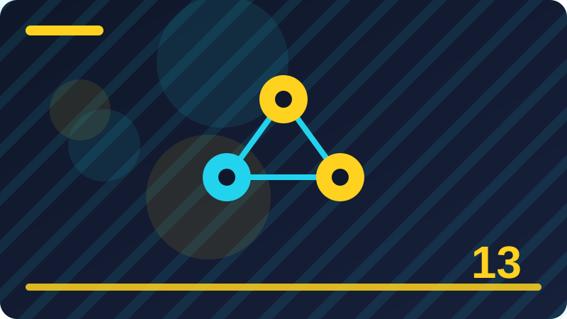

Chapter 13: Language Models in Plain Words

Section 1: What Is a Language Model
This section looks closely at What Is a Language Model, one building block in this chapter. It is worth slowing down here, because ideas that feel small at first often turn up again in much larger programs, and a clear understanding now will save you confusion later. Think of what is a language model as a tool you are adding to a growing toolkit: you do not need to master every detail today, but you should know what it is for, when it helps, and what a sensible first example looks like. At its simplest, what is a language model is about making your intention clear to both the computer and the next person who reads your work. The computer follows instructions literally, so vague thinking becomes a visible mistake, while clear thinking becomes a program that behaves as you expected. That is why the examples in this section are deliberately small: with only a few lines to watch, you can see cause and effect without distraction, and you can trace exactly how each part contributes to the result.
A short example is the best way to make what is a language model concrete, so read the code slowly, line by line, and say what you think each line does before you run it. Then run it, compare the output with your prediction, and if they differ, treat that difference as useful information rather than a failure. Learners often learn more from a surprising result than from a result that merely confirms what they already believed, because surprise points to a gap in understanding. Beginners often stumble on what is a language model for the same few reasons, and naming those reasons in advance makes them easier to avoid. One common problem is rushing past the example without running it, which leaves a fragile understanding that collapses at the first small change. Another is copying code without understanding it, which works until the copied code needs to be adapted. A third is changing several things at once, which makes it impossible to tell which change caused a new result.
from collections import Counter, defaultdict
pairs = defaultdict(Counter)
pairs['cats']['like'] += 2
pairs['cats']['sleep'] += 1
print(pairs['cats'].most_common(1))Beyond the first example, what is a language model becomes useful when it is combined with ideas from earlier chapters. Programming and working with language are rarely about one idea in isolation; they are about combining small, reliable pieces into something larger. That is why this book returns to earlier ideas instead of leaving them behind. Each time you reuse an old idea in a new context, your understanding of both ideas deepens, and your programs become more flexible. In this section, the key question to keep asking is practical: what problem does what is a language model solve, for whom, and in what situation would a simpler approach do just as well? If you cannot answer that question in plain words, you have found the right place to slow down. Try to describe the idea without using jargon, then add the technical word back only once the plain description is clear.
Check: What is the main idea behind what is a language model in your own words?
Section 2: Predicting the Next Word
This section looks closely at Predicting the Next Word, one building block in this chapter. It is worth slowing down here, because ideas that feel small at first often turn up again in much larger programs, and a clear understanding now will save you confusion later. Think of predicting the next word as a tool you are adding to a growing toolkit: you do not need to master every detail today, but you should know what it is for, when it helps, and what a sensible first example looks like. At its simplest, predicting the next word is about making your intention clear to both the computer and the next person who reads your work. The computer follows instructions literally, so vague thinking becomes a visible mistake, while clear thinking becomes a program that behaves as you expected. That is why the examples in this section are deliberately small: with only a few lines to watch, you can see cause and effect without distraction, and you can trace exactly how each part contributes to the result.
A short example is the best way to make predicting the next word concrete, so read the code slowly, line by line, and say what you think each line does before you run it. Then run it, compare the output with your prediction, and if they differ, treat that difference as useful information rather than a failure. Learners often learn more from a surprising result than from a result that merely confirms what they already believed, because surprise points to a gap in understanding. Beginners often stumble on predicting the next word for the same few reasons, and naming those reasons in advance makes them easier to avoid. One common problem is rushing past the example without running it, which leaves a fragile understanding that collapses at the first small change. Another is copying code without understanding it, which works until the copied code needs to be adapted. A third is changing several things at once, which makes it impossible to tell which change caused a new result.
import random
random.seed(1)
choices = ['fish', 'fish', 'walks']
print(random.choice(choices))Beyond the first example, predicting the next word becomes useful when it is combined with ideas from earlier chapters. Programming and working with language are rarely about one idea in isolation; they are about combining small, reliable pieces into something larger. That is why this book returns to earlier ideas instead of leaving them behind. Each time you reuse an old idea in a new context, your understanding of both ideas deepens, and your programs become more flexible. In this section, the key question to keep asking is practical: what problem does predicting the next word solve, for whom, and in what situation would a simpler approach do just as well? If you cannot answer that question in plain words, you have found the right place to slow down. Try to describe the idea without using jargon, then add the technical word back only once the plain description is clear.
Check: When would you use predicting the next word in a small program of your own?
Section 3: Counting What Comes Next
This section looks closely at Counting What Comes Next, one building block in this chapter. It is worth slowing down here, because ideas that feel small at first often turn up again in much larger programs, and a clear understanding now will save you confusion later. Think of counting what comes next as a tool you are adding to a growing toolkit: you do not need to master every detail today, but you should know what it is for, when it helps, and what a sensible first example looks like. At its simplest, counting what comes next is about making your intention clear to both the computer and the next person who reads your work. The computer follows instructions literally, so vague thinking becomes a visible mistake, while clear thinking becomes a program that behaves as you expected. That is why the examples in this section are deliberately small: with only a few lines to watch, you can see cause and effect without distraction, and you can trace exactly how each part contributes to the result.
A short example is the best way to make counting what comes next concrete, so read the code slowly, line by line, and say what you think each line does before you run it. Then run it, compare the output with your prediction, and if they differ, treat that difference as useful information rather than a failure. Learners often learn more from a surprising result than from a result that merely confirms what they already believed, because surprise points to a gap in understanding. Beginners often stumble on counting what comes next for the same few reasons, and naming those reasons in advance makes them easier to avoid. One common problem is rushing past the example without running it, which leaves a fragile understanding that collapses at the first small change. Another is copying code without understanding it, which works until the copied code needs to be adapted. A third is changing several things at once, which makes it impossible to tell which change caused a new result.
counts = {'like': 3, 'sleep': 1}
total = sum(counts.values())
for word, n in counts.items():
print(word, n / total)Beyond the first example, counting what comes next becomes useful when it is combined with ideas from earlier chapters. Programming and working with language are rarely about one idea in isolation; they are about combining small, reliable pieces into something larger. That is why this book returns to earlier ideas instead of leaving them behind. Each time you reuse an old idea in a new context, your understanding of both ideas deepens, and your programs become more flexible. In this section, the key question to keep asking is practical: what problem does counting what comes next solve, for whom, and in what situation would a simpler approach do just as well? If you cannot answer that question in plain words, you have found the right place to slow down. Try to describe the idea without using jargon, then add the technical word back only once the plain description is clear.
Check: What mistake are beginners most likely to make with counting what comes next?
Section 4: A Tiny Next-Word Model by Hand
This section looks closely at A Tiny Next-Word Model by Hand, one building block in this chapter. It is worth slowing down here, because ideas that feel small at first often turn up again in much larger programs, and a clear understanding now will save you confusion later. Think of a tiny next-word model by hand as a tool you are adding to a growing toolkit: you do not need to master every detail today, but you should know what it is for, when it helps, and what a sensible first example looks like. At its simplest, a tiny next-word model by hand is about making your intention clear to both the computer and the next person who reads your work. The computer follows instructions literally, so vague thinking becomes a visible mistake, while clear thinking becomes a program that behaves as you expected. That is why the examples in this section are deliberately small: with only a few lines to watch, you can see cause and effect without distraction, and you can trace exactly how each part contributes to the result.
A short example is the best way to make a tiny next-word model by hand concrete, so read the code slowly, line by line, and say what you think each line does before you run it. Then run it, compare the output with your prediction, and if they differ, treat that difference as useful information rather than a failure. Learners often learn more from a surprising result than from a result that merely confirms what they already believed, because surprise points to a gap in understanding. Beginners often stumble on a tiny next-word model by hand for the same few reasons, and naming those reasons in advance makes them easier to avoid. One common problem is rushing past the example without running it, which leaves a fragile understanding that collapses at the first small change. Another is copying code without understanding it, which works until the copied code needs to be adapted. A third is changing several things at once, which makes it impossible to tell which change caused a new result.
text = 'cats like fish cats like naps'
words = text.split()
pairs = {}
for a, b in zip(words, words[1:]):
pairs.setdefault(a, []).append(b)
print(pairs)Beyond the first example, a tiny next-word model by hand becomes useful when it is combined with ideas from earlier chapters. Programming and working with language are rarely about one idea in isolation; they are about combining small, reliable pieces into something larger. That is why this book returns to earlier ideas instead of leaving them behind. Each time you reuse an old idea in a new context, your understanding of both ideas deepens, and your programs become more flexible. In this section, the key question to keep asking is practical: what problem does a tiny next-word model by hand solve, for whom, and in what situation would a simpler approach do just as well? If you cannot answer that question in plain words, you have found the right place to slow down. Try to describe the idea without using jargon, then add the technical word back only once the plain description is clear.
Check: How would you explain a tiny next-word model by hand to a friend who has never coded?
Section 5: Why the Most Common Next Word Is Not Always Right
This section looks closely at Why the Most Common Next Word Is Not Always Right, one building block in this chapter. It is worth slowing down here, because ideas that feel small at first often turn up again in much larger programs, and a clear understanding now will save you confusion later. Think of why the most common next word is not always right as a tool you are adding to a growing toolkit: you do not need to master every detail today, but you should know what it is for, when it helps, and what a sensible first example looks like. At its simplest, why the most common next word is not always right is about making your intention clear to both the computer and the next person who reads your work. The computer follows instructions literally, so vague thinking becomes a visible mistake, while clear thinking becomes a program that behaves as you expected. That is why the examples in this section are deliberately small: with only a few lines to watch, you can see cause and effect without distraction, and you can trace exactly how each part contributes to the result.
A short example is the best way to make why the most common next word is not always right concrete, so read the code slowly, line by line, and say what you think each line does before you run it. Then run it, compare the output with your prediction, and if they differ, treat that difference as useful information rather than a failure. Learners often learn more from a surprising result than from a result that merely confirms what they already believed, because surprise points to a gap in understanding. Beginners often stumble on why the most common next word is not always right for the same few reasons, and naming those reasons in advance makes them easier to avoid. One common problem is rushing past the example without running it, which leaves a fragile understanding that collapses at the first small change. Another is copying code without understanding it, which works until the copied code needs to be adapted. A third is changing several things at once, which makes it impossible to tell which change caused a new result.
model = {'the': 'cat', 'cat': 'sat'}
word = 'the'
for _ in range(3):
word = model.get(word, 'stop')
print(word)Beyond the first example, why the most common next word is not always right becomes useful when it is combined with ideas from earlier chapters. Programming and working with language are rarely about one idea in isolation; they are about combining small, reliable pieces into something larger. That is why this book returns to earlier ideas instead of leaving them behind. Each time you reuse an old idea in a new context, your understanding of both ideas deepens, and your programs become more flexible. In this section, the key question to keep asking is practical: what problem does why the most common next word is not always right solve, for whom, and in what situation would a simpler approach do just as well? If you cannot answer that question in plain words, you have found the right place to slow down.
Check: What would you change in the example to test why the most common next word is not always right further?
Section 6: Probability in Plain Words
This section looks closely at Probability in Plain Words, one building block in this chapter. It is worth slowing down here, because ideas that feel small at first often turn up again in much larger programs, and a clear understanding now will save you confusion later. Think of probability in plain words as a tool you are adding to a growing toolkit: you do not need to master every detail today, but you should know what it is for, when it helps, and what a sensible first example looks like. At its simplest, probability in plain words is about making your intention clear to both the computer and the next person who reads your work. The computer follows instructions literally, so vague thinking becomes a visible mistake, while clear thinking becomes a program that behaves as you expected. That is why the examples in this section are deliberately small: with only a few lines to watch, you can see cause and effect without distraction, and you can trace exactly how each part contributes to the result.
A short example is the best way to make probability in plain words concrete, so read the code slowly, line by line, and say what you think each line does before you run it. Then run it, compare the output with your prediction, and if they differ, treat that difference as useful information rather than a failure. Learners often learn more from a surprising result than from a result that merely confirms what they already believed, because surprise points to a gap in understanding. Beginners often stumble on probability in plain words for the same few reasons, and naming those reasons in advance makes them easier to avoid. One common problem is rushing past the example without running it, which leaves a fragile understanding that collapses at the first small change. Another is copying code without understanding it, which works until the copied code needs to be adapted. A third is changing several things at once, which makes it impossible to tell which change caused a new result.
from collections import Counter
print(Counter('cats like fish'.split()))Beyond the first example, probability in plain words becomes useful when it is combined with ideas from earlier chapters. Programming and working with language are rarely about one idea in isolation; they are about combining small, reliable pieces into something larger. That is why this book returns to earlier ideas instead of leaving them behind. Each time you reuse an old idea in a new context, your understanding of both ideas deepens, and your programs become more flexible. In this section, the key question to keep asking is practical: what problem does probability in plain words solve, for whom, and in what situation would a simpler approach do just as well? If you cannot answer that question in plain words, you have found the right place to slow down. Try to describe the idea without using jargon, then add the technical word back only once the plain description is clear.
Check: Why does probability in plain words matter for programs you want to build later?
Section 7: Choosing Between Likely and Surprising Words
This section looks closely at Choosing Between Likely and Surprising Words, one building block in this chapter. It is worth slowing down here, because ideas that feel small at first often turn up again in much larger programs, and a clear understanding now will save you confusion later. Think of choosing between likely and surprising words as a tool you are adding to a growing toolkit: you do not need to master every detail today, but you should know what it is for, when it helps, and what a sensible first example looks like. At its simplest, choosing between likely and surprising words is about making your intention clear to both the computer and the next person who reads your work. The computer follows instructions literally, so vague thinking becomes a visible mistake, while clear thinking becomes a program that behaves as you expected. That is why the examples in this section are deliberately small: with only a few lines to watch, you can see cause and effect without distraction, and you can trace exactly how each part contributes to the result.
A short example is the best way to make choosing between likely and surprising words concrete, so read the code slowly, line by line, and say what you think each line does before you run it. Then run it, compare the output with your prediction, and if they differ, treat that difference as useful information rather than a failure. Learners often learn more from a surprising result than from a result that merely confirms what they already believed, because surprise points to a gap in understanding. Beginners often stumble on choosing between likely and surprising words for the same few reasons, and naming those reasons in advance makes them easier to avoid. One common problem is rushing past the example without running it, which leaves a fragile understanding that collapses at the first small change. Another is copying code without understanding it, which works until the copied code needs to be adapted. A third is changing several things at once, which makes it impossible to tell which change caused a new result.
words = ['a', 'b', 'a', 'c']
print('most common:', Counter(words).most_common(1))Beyond the first example, choosing between likely and surprising words becomes useful when it is combined with ideas from earlier chapters. Programming and working with language are rarely about one idea in isolation; they are about combining small, reliable pieces into something larger. That is why this book returns to earlier ideas instead of leaving them behind. Each time you reuse an old idea in a new context, your understanding of both ideas deepens, and your programs become more flexible. In this section, the key question to keep asking is practical: what problem does choosing between likely and surprising words solve, for whom, and in what situation would a simpler approach do just as well? If you cannot answer that question in plain words, you have found the right place to slow down. Try to describe the idea without using jargon, then add the technical word back only once the plain description is clear.
Check: What is the main idea behind choosing between likely and surprising words in your own words?
Section 8: Randomness and Temperature in Plain Words
This section looks closely at Randomness and Temperature in Plain Words, one building block in this chapter. It is worth slowing down here, because ideas that feel small at first often turn up again in much larger programs, and a clear understanding now will save you confusion later. Think of randomness and temperature in plain words as a tool you are adding to a growing toolkit: you do not need to master every detail today, but you should know what it is for, when it helps, and what a sensible first example looks like. At its simplest, randomness and temperature in plain words is about making your intention clear to both the computer and the next person who reads your work. The computer follows instructions literally, so vague thinking becomes a visible mistake, while clear thinking becomes a program that behaves as you expected. That is why the examples in this section are deliberately small: with only a few lines to watch, you can see cause and effect without distraction, and you can trace exactly how each part contributes to the result.
A short example is the best way to make randomness and temperature in plain words concrete, so read the code slowly, line by line, and say what you think each line does before you run it. Then run it, compare the output with your prediction, and if they differ, treat that difference as useful information rather than a failure. Learners often learn more from a surprising result than from a result that merely confirms what they already believed, because surprise points to a gap in understanding. Beginners often stumble on randomness and temperature in plain words for the same few reasons, and naming those reasons in advance makes them easier to avoid. One common problem is rushing past the example without running it, which leaves a fragile understanding that collapses at the first small change. Another is copying code without understanding it, which works until the copied code needs to be adapted. A third is changing several things at once, which makes it impossible to tell which change caused a new result.
import random
random.seed(7)
print(random.choice(['yes', 'no', 'maybe']))Beyond the first example, randomness and temperature in plain words becomes useful when it is combined with ideas from earlier chapters. Programming and working with language are rarely about one idea in isolation; they are about combining small, reliable pieces into something larger. That is why this book returns to earlier ideas instead of leaving them behind. Each time you reuse an old idea in a new context, your understanding of both ideas deepens, and your programs become more flexible. In this section, the key question to keep asking is practical: what problem does randomness and temperature in plain words solve, for whom, and in what situation would a simpler approach do just as well? If you cannot answer that question in plain words, you have found the right place to slow down. Try to describe the idea without using jargon, then add the technical word back only once the plain description is clear.
Check: When would you use randomness and temperature in plain words in a small program of your own?
Section 9: Greedy Choice Versus Sampling
This section looks closely at Greedy Choice Versus Sampling, one building block in this chapter. It is worth slowing down here, because ideas that feel small at first often turn up again in much larger programs, and a clear understanding now will save you confusion later. Think of greedy choice versus sampling as a tool you are adding to a growing toolkit: you do not need to master every detail today, but you should know what it is for, when it helps, and what a sensible first example looks like. At its simplest, greedy choice versus sampling is about making your intention clear to both the computer and the next person who reads your work. The computer follows instructions literally, so vague thinking becomes a visible mistake, while clear thinking becomes a program that behaves as you expected. That is why the examples in this section are deliberately small: with only a few lines to watch, you can see cause and effect without distraction, and you can trace exactly how each part contributes to the result.
A short example is the best way to make greedy choice versus sampling concrete, so read the code slowly, line by line, and say what you think each line does before you run it. Then run it, compare the output with your prediction, and if they differ, treat that difference as useful information rather than a failure. Learners often learn more from a surprising result than from a result that merely confirms what they already believed, because surprise points to a gap in understanding. Beginners often stumble on greedy choice versus sampling for the same few reasons, and naming those reasons in advance makes them easier to avoid. One common problem is rushing past the example without running it, which leaves a fragile understanding that collapses at the first small change. Another is copying code without understanding it, which works until the copied code needs to be adapted. A third is changing several things at once, which makes it impossible to tell which change caused a new result.
from collections import Counter, defaultdict
pairs = defaultdict(Counter)
pairs['cats']['like'] += 2
pairs['cats']['sleep'] += 1
print(pairs['cats'].most_common(1))Beyond the first example, greedy choice versus sampling becomes useful when it is combined with ideas from earlier chapters. Programming and working with language are rarely about one idea in isolation; they are about combining small, reliable pieces into something larger. That is why this book returns to earlier ideas instead of leaving them behind. Each time you reuse an old idea in a new context, your understanding of both ideas deepens, and your programs become more flexible. In this section, the key question to keep asking is practical: what problem does greedy choice versus sampling solve, for whom, and in what situation would a simpler approach do just as well? If you cannot answer that question in plain words, you have found the right place to slow down. Try to describe the idea without using jargon, then add the technical word back only once the plain description is clear.
Check: What mistake are beginners most likely to make with greedy choice versus sampling?
Section 10: Training in Plain Words
This section looks closely at Training in Plain Words, one building block in this chapter. It is worth slowing down here, because ideas that feel small at first often turn up again in much larger programs, and a clear understanding now will save you confusion later. Think of training in plain words as a tool you are adding to a growing toolkit: you do not need to master every detail today, but you should know what it is for, when it helps, and what a sensible first example looks like. At its simplest, training in plain words is about making your intention clear to both the computer and the next person who reads your work. The computer follows instructions literally, so vague thinking becomes a visible mistake, while clear thinking becomes a program that behaves as you expected. That is why the examples in this section are deliberately small: with only a few lines to watch, you can see cause and effect without distraction, and you can trace exactly how each part contributes to the result.
A short example is the best way to make training in plain words concrete, so read the code slowly, line by line, and say what you think each line does before you run it. Then run it, compare the output with your prediction, and if they differ, treat that difference as useful information rather than a failure. Learners often learn more from a surprising result than from a result that merely confirms what they already believed, because surprise points to a gap in understanding. Beginners often stumble on training in plain words for the same few reasons, and naming those reasons in advance makes them easier to avoid. One common problem is rushing past the example without running it, which leaves a fragile understanding that collapses at the first small change. Another is copying code without understanding it, which works until the copied code needs to be adapted. A third is changing several things at once, which makes it impossible to tell which change caused a new result.
import random
random.seed(1)
choices = ['fish', 'fish', 'walks']
print(random.choice(choices))Beyond the first example, training in plain words becomes useful when it is combined with ideas from earlier chapters. Programming and working with language are rarely about one idea in isolation; they are about combining small, reliable pieces into something larger. That is why this book returns to earlier ideas instead of leaving them behind. Each time you reuse an old idea in a new context, your understanding of both ideas deepens, and your programs become more flexible. In this section, the key question to keep asking is practical: what problem does training in plain words solve, for whom, and in what situation would a simpler approach do just as well? If you cannot answer that question in plain words, you have found the right place to slow down. Try to describe the idea without using jargon, then add the technical word back only once the plain description is clear.
Check: How would you explain training in plain words to a friend who has never coded?
Section 11: Learning From Lots of Text
This section looks closely at Learning From Lots of Text, one building block in this chapter. It is worth slowing down here, because ideas that feel small at first often turn up again in much larger programs, and a clear understanding now will save you confusion later. Think of learning from lots of text as a tool you are adding to a growing toolkit: you do not need to master every detail today, but you should know what it is for, when it helps, and what a sensible first example looks like. At its simplest, learning from lots of text is about making your intention clear to both the computer and the next person who reads your work. The computer follows instructions literally, so vague thinking becomes a visible mistake, while clear thinking becomes a program that behaves as you expected. That is why the examples in this section are deliberately small: with only a few lines to watch, you can see cause and effect without distraction, and you can trace exactly how each part contributes to the result.
A short example is the best way to make learning from lots of text concrete, so read the code slowly, line by line, and say what you think each line does before you run it. Then run it, compare the output with your prediction, and if they differ, treat that difference as useful information rather than a failure. Learners often learn more from a surprising result than from a result that merely confirms what they already believed, because surprise points to a gap in understanding. Beginners often stumble on learning from lots of text for the same few reasons, and naming those reasons in advance makes them easier to avoid. One common problem is rushing past the example without running it, which leaves a fragile understanding that collapses at the first small change. Another is copying code without understanding it, which works until the copied code needs to be adapted. A third is changing several things at once, which makes it impossible to tell which change caused a new result.
counts = {'like': 3, 'sleep': 1}
total = sum(counts.values())
for word, n in counts.items():
print(word, n / total)Beyond the first example, learning from lots of text becomes useful when it is combined with ideas from earlier chapters. Programming and working with language are rarely about one idea in isolation; they are about combining small, reliable pieces into something larger. That is why this book returns to earlier ideas instead of leaving them behind. Each time you reuse an old idea in a new context, your understanding of both ideas deepens, and your programs become more flexible. In this section, the key question to keep asking is practical: what problem does learning from lots of text solve, for whom, and in what situation would a simpler approach do just as well? If you cannot answer that question in plain words, you have found the right place to slow down. Try to describe the idea without using jargon, then add the technical word back only once the plain description is clear.
Check: What would you change in the example to test learning from lots of text further?
Section 12: What a Model Learns and What It Does Not
This section looks closely at What a Model Learns and What It Does Not, one building block in this chapter. It is worth slowing down here, because ideas that feel small at first often turn up again in much larger programs, and a clear understanding now will save you confusion later. Think of what a model learns and what it does not as a tool you are adding to a growing toolkit: you do not need to master every detail today, but you should know what it is for, when it helps, and what a sensible first example looks like. At its simplest, what a model learns and what it does not is about making your intention clear to both the computer and the next person who reads your work. The computer follows instructions literally, so vague thinking becomes a visible mistake, while clear thinking becomes a program that behaves as you expected. That is why the examples in this section are deliberately small: with only a few lines to watch, you can see cause and effect without distraction, and you can trace exactly how each part contributes to the result.
A short example is the best way to make what a model learns and what it does not concrete, so read the code slowly, line by line, and say what you think each line does before you run it. Then run it, compare the output with your prediction, and if they differ, treat that difference as useful information rather than a failure. Learners often learn more from a surprising result than from a result that merely confirms what they already believed, because surprise points to a gap in understanding. Beginners often stumble on what a model learns and what it does not for the same few reasons, and naming those reasons in advance makes them easier to avoid. One common problem is rushing past the example without running it, which leaves a fragile understanding that collapses at the first small change. Another is copying code without understanding it, which works until the copied code needs to be adapted. A third is changing several things at once, which makes it impossible to tell which change caused a new result.
text = 'cats like fish cats like naps'
words = text.split()
pairs = {}
for a, b in zip(words, words[1:]):
pairs.setdefault(a, []).append(b)
print(pairs)Beyond the first example, what a model learns and what it does not becomes useful when it is combined with ideas from earlier chapters. Programming and working with language are rarely about one idea in isolation; they are about combining small, reliable pieces into something larger. That is why this book returns to earlier ideas instead of leaving them behind. Each time you reuse an old idea in a new context, your understanding of both ideas deepens, and your programs become more flexible. In this section, the key question to keep asking is practical: what problem does what a model learns and what it does not solve, for whom, and in what situation would a simpler approach do just as well? If you cannot answer that question in plain words, you have found the right place to slow down. Try to describe the idea without using jargon, then add the technical word back only once the plain description is clear.
Check: Why does what a model learns and what it does not matter for programs you want to build later?
Section 13: Memorising Versus Generalising
This section looks closely at Memorising Versus Generalising, one building block in this chapter. It is worth slowing down here, because ideas that feel small at first often turn up again in much larger programs, and a clear understanding now will save you confusion later. Think of memorising versus generalising as a tool you are adding to a growing toolkit: you do not need to master every detail today, but you should know what it is for, when it helps, and what a sensible first example looks like. At its simplest, memorising versus generalising is about making your intention clear to both the computer and the next person who reads your work. The computer follows instructions literally, so vague thinking becomes a visible mistake, while clear thinking becomes a program that behaves as you expected. That is why the examples in this section are deliberately small: with only a few lines to watch, you can see cause and effect without distraction, and you can trace exactly how each part contributes to the result.
A short example is the best way to make memorising versus generalising concrete, so read the code slowly, line by line, and say what you think each line does before you run it. Then run it, compare the output with your prediction, and if they differ, treat that difference as useful information rather than a failure. Learners often learn more from a surprising result than from a result that merely confirms what they already believed, because surprise points to a gap in understanding. Beginners often stumble on memorising versus generalising for the same few reasons, and naming those reasons in advance makes them easier to avoid. One common problem is rushing past the example without running it, which leaves a fragile understanding that collapses at the first small change. Another is copying code without understanding it, which works until the copied code needs to be adapted. A third is changing several things at once, which makes it impossible to tell which change caused a new result.
model = {'the': 'cat', 'cat': 'sat'}
word = 'the'
for _ in range(3):
word = model.get(word, 'stop')
print(word)Beyond the first example, memorising versus generalising becomes useful when it is combined with ideas from earlier chapters. Programming and working with language are rarely about one idea in isolation; they are about combining small, reliable pieces into something larger. That is why this book returns to earlier ideas instead of leaving them behind. Each time you reuse an old idea in a new context, your understanding of both ideas deepens, and your programs become more flexible. In this section, the key question to keep asking is practical: what problem does memorising versus generalising solve, for whom, and in what situation would a simpler approach do just as well? If you cannot answer that question in plain words, you have found the right place to slow down. Try to describe the idea without using jargon, then add the technical word back only once the plain description is clear.
Check: What is the main idea behind memorising versus generalising in your own words?
Section 14: Why Models Repeat Themselves
This section looks closely at Why Models Repeat Themselves, one building block in this chapter. It is worth slowing down here, because ideas that feel small at first often turn up again in much larger programs, and a clear understanding now will save you confusion later. Think of why models repeat themselves as a tool you are adding to a growing toolkit: you do not need to master every detail today, but you should know what it is for, when it helps, and what a sensible first example looks like. At its simplest, why models repeat themselves is about making your intention clear to both the computer and the next person who reads your work. The computer follows instructions literally, so vague thinking becomes a visible mistake, while clear thinking becomes a program that behaves as you expected. That is why the examples in this section are deliberately small: with only a few lines to watch, you can see cause and effect without distraction, and you can trace exactly how each part contributes to the result.
A short example is the best way to make why models repeat themselves concrete, so read the code slowly, line by line, and say what you think each line does before you run it. Then run it, compare the output with your prediction, and if they differ, treat that difference as useful information rather than a failure. Learners often learn more from a surprising result than from a result that merely confirms what they already believed, because surprise points to a gap in understanding. Beginners often stumble on why models repeat themselves for the same few reasons, and naming those reasons in advance makes them easier to avoid. One common problem is rushing past the example without running it, which leaves a fragile understanding that collapses at the first small change. Another is copying code without understanding it, which works until the copied code needs to be adapted. A third is changing several things at once, which makes it impossible to tell which change caused a new result.
from collections import Counter
print(Counter('cats like fish'.split()))Beyond the first example, why models repeat themselves becomes useful when it is combined with ideas from earlier chapters. Programming and working with language are rarely about one idea in isolation; they are about combining small, reliable pieces into something larger. That is why this book returns to earlier ideas instead of leaving them behind. Each time you reuse an old idea in a new context, your understanding of both ideas deepens, and your programs become more flexible. In this section, the key question to keep asking is practical: what problem does why models repeat themselves solve, for whom, and in what situation would a simpler approach do just as well? If you cannot answer that question in plain words, you have found the right place to slow down. Try to describe the idea without using jargon, then add the technical word back only once the plain description is clear.
Check: When would you use why models repeat themselves in a small program of your own?
Section 15: Why Models Sometimes Contradict Themselves
This section looks closely at Why Models Sometimes Contradict Themselves, one building block in this chapter. It is worth slowing down here, because ideas that feel small at first often turn up again in much larger programs, and a clear understanding now will save you confusion later. Think of why models sometimes contradict themselves as a tool you are adding to a growing toolkit: you do not need to master every detail today, but you should know what it is for, when it helps, and what a sensible first example looks like. At its simplest, why models sometimes contradict themselves is about making your intention clear to both the computer and the next person who reads your work. The computer follows instructions literally, so vague thinking becomes a visible mistake, while clear thinking becomes a program that behaves as you expected. That is why the examples in this section are deliberately small: with only a few lines to watch, you can see cause and effect without distraction, and you can trace exactly how each part contributes to the result.
A short example is the best way to make why models sometimes contradict themselves concrete, so read the code slowly, line by line, and say what you think each line does before you run it. Then run it, compare the output with your prediction, and if they differ, treat that difference as useful information rather than a failure. Learners often learn more from a surprising result than from a result that merely confirms what they already believed, because surprise points to a gap in understanding. Beginners often stumble on why models sometimes contradict themselves for the same few reasons, and naming those reasons in advance makes them easier to avoid. One common problem is rushing past the example without running it, which leaves a fragile understanding that collapses at the first small change. Another is copying code without understanding it, which works until the copied code needs to be adapted. A third is changing several things at once, which makes it impossible to tell which change caused a new result.
words = ['a', 'b', 'a', 'c']
print('most common:', Counter(words).most_common(1))Beyond the first example, why models sometimes contradict themselves becomes useful when it is combined with ideas from earlier chapters. Programming and working with language are rarely about one idea in isolation; they are about combining small, reliable pieces into something larger. That is why this book returns to earlier ideas instead of leaving them behind. Each time you reuse an old idea in a new context, your understanding of both ideas deepens, and your programs become more flexible. In this section, the key question to keep asking is practical: what problem does why models sometimes contradict themselves solve, for whom, and in what situation would a simpler approach do just as well? If you cannot answer that question in plain words, you have found the right place to slow down. Try to describe the idea without using jargon, then add the technical word back only once the plain description is clear.
Check: What mistake are beginners most likely to make with why models sometimes contradict themselves?
Section 16: Short Memory and Long Memory
This section looks closely at Short Memory and Long Memory, one building block in this chapter. It is worth slowing down here, because ideas that feel small at first often turn up again in much larger programs, and a clear understanding now will save you confusion later. Think of short memory and long memory as a tool you are adding to a growing toolkit: you do not need to master every detail today, but you should know what it is for, when it helps, and what a sensible first example looks like. At its simplest, short memory and long memory is about making your intention clear to both the computer and the next person who reads your work. The computer follows instructions literally, so vague thinking becomes a visible mistake, while clear thinking becomes a program that behaves as you expected. That is why the examples in this section are deliberately small: with only a few lines to watch, you can see cause and effect without distraction, and you can trace exactly how each part contributes to the result.
A short example is the best way to make short memory and long memory concrete, so read the code slowly, line by line, and say what you think each line does before you run it. Then run it, compare the output with your prediction, and if they differ, treat that difference as useful information rather than a failure. Learners often learn more from a surprising result than from a result that merely confirms what they already believed, because surprise points to a gap in understanding. Beginners often stumble on short memory and long memory for the same few reasons, and naming those reasons in advance makes them easier to avoid. One common problem is rushing past the example without running it, which leaves a fragile understanding that collapses at the first small change. Another is copying code without understanding it, which works until the copied code needs to be adapted. A third is changing several things at once, which makes it impossible to tell which change caused a new result.
import random
random.seed(7)
print(random.choice(['yes', 'no', 'maybe']))Beyond the first example, short memory and long memory becomes useful when it is combined with ideas from earlier chapters. Programming and working with language are rarely about one idea in isolation; they are about combining small, reliable pieces into something larger. That is why this book returns to earlier ideas instead of leaving them behind. Each time you reuse an old idea in a new context, your understanding of both ideas deepens, and your programs become more flexible. In this section, the key question to keep asking is practical: what problem does short memory and long memory solve, for whom, and in what situation would a simpler approach do just as well? If you cannot answer that question in plain words, you have found the right place to slow down. Try to describe the idea without using jargon, then add the technical word back only once the plain description is clear.
Check: How would you explain short memory and long memory to a friend who has never coded?
Section 17: The Context Window in Plain Words
This section looks closely at The Context Window in Plain Words, one building block in this chapter. It is worth slowing down here, because ideas that feel small at first often turn up again in much larger programs, and a clear understanding now will save you confusion later. Think of the context window in plain words as a tool you are adding to a growing toolkit: you do not need to master every detail today, but you should know what it is for, when it helps, and what a sensible first example looks like. At its simplest, the context window in plain words is about making your intention clear to both the computer and the next person who reads your work. The computer follows instructions literally, so vague thinking becomes a visible mistake, while clear thinking becomes a program that behaves as you expected. That is why the examples in this section are deliberately small: with only a few lines to watch, you can see cause and effect without distraction, and you can trace exactly how each part contributes to the result.
A short example is the best way to make the context window in plain words concrete, so read the code slowly, line by line, and say what you think each line does before you run it. Then run it, compare the output with your prediction, and if they differ, treat that difference as useful information rather than a failure. Learners often learn more from a surprising result than from a result that merely confirms what they already believed, because surprise points to a gap in understanding. Beginners often stumble on the context window in plain words for the same few reasons, and naming those reasons in advance makes them easier to avoid. One common problem is rushing past the example without running it, which leaves a fragile understanding that collapses at the first small change. Another is copying code without understanding it, which works until the copied code needs to be adapted. A third is changing several things at once, which makes it impossible to tell which change caused a new result.
from collections import Counter, defaultdict
pairs = defaultdict(Counter)
pairs['cats']['like'] += 2
pairs['cats']['sleep'] += 1
print(pairs['cats'].most_common(1))Beyond the first example, the context window in plain words becomes useful when it is combined with ideas from earlier chapters. Programming and working with language are rarely about one idea in isolation; they are about combining small, reliable pieces into something larger. That is why this book returns to earlier ideas instead of leaving them behind. Each time you reuse an old idea in a new context, your understanding of both ideas deepens, and your programs become more flexible. In this section, the key question to keep asking is practical: what problem does the context window in plain words solve, for whom, and in what situation would a simpler approach do just as well? If you cannot answer that question in plain words, you have found the right place to slow down. Try to describe the idea without using jargon, then add the technical word back only once the plain description is clear.
Check: What would you change in the example to test the context window in plain words further?
Section 18: How Models Handle Long Conversations
This section looks closely at How Models Handle Long Conversations, one building block in this chapter. It is worth slowing down here, because ideas that feel small at first often turn up again in much larger programs, and a clear understanding now will save you confusion later. Think of how models handle long conversations as a tool you are adding to a growing toolkit: you do not need to master every detail today, but you should know what it is for, when it helps, and what a sensible first example looks like. At its simplest, how models handle long conversations is about making your intention clear to both the computer and the next person who reads your work. The computer follows instructions literally, so vague thinking becomes a visible mistake, while clear thinking becomes a program that behaves as you expected. That is why the examples in this section are deliberately small: with only a few lines to watch, you can see cause and effect without distraction, and you can trace exactly how each part contributes to the result.
A short example is the best way to make how models handle long conversations concrete, so read the code slowly, line by line, and say what you think each line does before you run it. Then run it, compare the output with your prediction, and if they differ, treat that difference as useful information rather than a failure. Learners often learn more from a surprising result than from a result that merely confirms what they already believed, because surprise points to a gap in understanding. Beginners often stumble on how models handle long conversations for the same few reasons, and naming those reasons in advance makes them easier to avoid. One common problem is rushing past the example without running it, which leaves a fragile understanding that collapses at the first small change. Another is copying code without understanding it, which works until the copied code needs to be adapted. A third is changing several things at once, which makes it impossible to tell which change caused a new result.
import random
random.seed(1)
choices = ['fish', 'fish', 'walks']
print(random.choice(choices))Beyond the first example, how models handle long conversations becomes useful when it is combined with ideas from earlier chapters. Programming and working with language are rarely about one idea in isolation; they are about combining small, reliable pieces into something larger. That is why this book returns to earlier ideas instead of leaving them behind. Each time you reuse an old idea in a new context, your understanding of both ideas deepens, and your programs become more flexible. In this section, the key question to keep asking is practical: what problem does how models handle long conversations solve, for whom, and in what situation would a simpler approach do just as well? If you cannot answer that question in plain words, you have found the right place to slow down. Try to describe the idea without using jargon, then add the technical word back only once the plain description is clear.
Check: Why does how models handle long conversations matter for programs you want to build later?
Section 19: Why the Same Prompt Can Give Different Answers
This section looks closely at Why the Same Prompt Can Give Different Answers, one building block in this chapter. It is worth slowing down here, because ideas that feel small at first often turn up again in much larger programs, and a clear understanding now will save you confusion later. Think of why the same prompt can give different answers as a tool you are adding to a growing toolkit: you do not need to master every detail today, but you should know what it is for, when it helps, and what a sensible first example looks like. At its simplest, why the same prompt can give different answers is about making your intention clear to both the computer and the next person who reads your work. The computer follows instructions literally, so vague thinking becomes a visible mistake, while clear thinking becomes a program that behaves as you expected. That is why the examples in this section are deliberately small: with only a few lines to watch, you can see cause and effect without distraction, and you can trace exactly how each part contributes to the result.
A short example is the best way to make why the same prompt can give different answers concrete, so read the code slowly, line by line, and say what you think each line does before you run it. Then run it, compare the output with your prediction, and if they differ, treat that difference as useful information rather than a failure. Learners often learn more from a surprising result than from a result that merely confirms what they already believed, because surprise points to a gap in understanding. Beginners often stumble on why the same prompt can give different answers for the same few reasons, and naming those reasons in advance makes them easier to avoid. One common problem is rushing past the example without running it, which leaves a fragile understanding that collapses at the first small change. Another is copying code without understanding it, which works until the copied code needs to be adapted. A third is changing several things at once, which makes it impossible to tell which change caused a new result.
counts = {'like': 3, 'sleep': 1}
total = sum(counts.values())
for word, n in counts.items():
print(word, n / total)Beyond the first example, why the same prompt can give different answers becomes useful when it is combined with ideas from earlier chapters. Programming and working with language are rarely about one idea in isolation; they are about combining small, reliable pieces into something larger. That is why this book returns to earlier ideas instead of leaving them behind. Each time you reuse an old idea in a new context, your understanding of both ideas deepens, and your programs become more flexible. In this section, the key question to keep asking is practical: what problem does why the same prompt can give different answers solve, for whom, and in what situation would a simpler approach do just as well? If you cannot answer that question in plain words, you have found the right place to slow down. Try to describe the idea without using jargon, then add the technical word back only once the plain description is clear.
Check: What is the main idea behind why the same prompt can give different answers in your own words?
Section 20: Setting a Seed for Repeatable Toy Results
This section looks closely at Setting a Seed for Repeatable Toy Results, one building block in this chapter. It is worth slowing down here, because ideas that feel small at first often turn up again in much larger programs, and a clear understanding now will save you confusion later. Think of setting a seed for repeatable toy results as a tool you are adding to a growing toolkit: you do not need to master every detail today, but you should know what it is for, when it helps, and what a sensible first example looks like. At its simplest, setting a seed for repeatable toy results is about making your intention clear to both the computer and the next person who reads your work. The computer follows instructions literally, so vague thinking becomes a visible mistake, while clear thinking becomes a program that behaves as you expected. That is why the examples in this section are deliberately small: with only a few lines to watch, you can see cause and effect without distraction, and you can trace exactly how each part contributes to the result.
A short example is the best way to make setting a seed for repeatable toy results concrete, so read the code slowly, line by line, and say what you think each line does before you run it. Then run it, compare the output with your prediction, and if they differ, treat that difference as useful information rather than a failure. Learners often learn more from a surprising result than from a result that merely confirms what they already believed, because surprise points to a gap in understanding. Beginners often stumble on setting a seed for repeatable toy results for the same few reasons, and naming those reasons in advance makes them easier to avoid. One common problem is rushing past the example without running it, which leaves a fragile understanding that collapses at the first small change. Another is copying code without understanding it, which works until the copied code needs to be adapted. A third is changing several things at once, which makes it impossible to tell which change caused a new result.
text = 'cats like fish cats like naps'
words = text.split()
pairs = {}
for a, b in zip(words, words[1:]):
pairs.setdefault(a, []).append(b)
print(pairs)Beyond the first example, setting a seed for repeatable toy results becomes useful when it is combined with ideas from earlier chapters. Programming and working with language are rarely about one idea in isolation; they are about combining small, reliable pieces into something larger. That is why this book returns to earlier ideas instead of leaving them behind. Each time you reuse an old idea in a new context, your understanding of both ideas deepens, and your programs become more flexible. In this section, the key question to keep asking is practical: what problem does setting a seed for repeatable toy results solve, for whom, and in what situation would a simpler approach do just as well? If you cannot answer that question in plain words, you have found the right place to slow down. Try to describe the idea without using jargon, then add the technical word back only once the plain description is clear.
Check: When would you use setting a seed for repeatable toy results in a small program of your own?
Section 21: A Toy Model You Can Trace by Hand
This section looks closely at A Toy Model You Can Trace by Hand, one building block in this chapter. It is worth slowing down here, because ideas that feel small at first often turn up again in much larger programs, and a clear understanding now will save you confusion later. Think of a toy model you can trace by hand as a tool you are adding to a growing toolkit: you do not need to master every detail today, but you should know what it is for, when it helps, and what a sensible first example looks like. At its simplest, a toy model you can trace by hand is about making your intention clear to both the computer and the next person who reads your work. The computer follows instructions literally, so vague thinking becomes a visible mistake, while clear thinking becomes a program that behaves as you expected. That is why the examples in this section are deliberately small: with only a few lines to watch, you can see cause and effect without distraction, and you can trace exactly how each part contributes to the result.
A short example is the best way to make a toy model you can trace by hand concrete, so read the code slowly, line by line, and say what you think each line does before you run it. Then run it, compare the output with your prediction, and if they differ, treat that difference as useful information rather than a failure. Learners often learn more from a surprising result than from a result that merely confirms what they already believed, because surprise points to a gap in understanding. Beginners often stumble on a toy model you can trace by hand for the same few reasons, and naming those reasons in advance makes them easier to avoid. One common problem is rushing past the example without running it, which leaves a fragile understanding that collapses at the first small change. Another is copying code without understanding it, which works until the copied code needs to be adapted. A third is changing several things at once, which makes it impossible to tell which change caused a new result.
model = {'the': 'cat', 'cat': 'sat'}
word = 'the'
for _ in range(3):
word = model.get(word, 'stop')
print(word)Beyond the first example, a toy model you can trace by hand becomes useful when it is combined with ideas from earlier chapters. Programming and working with language are rarely about one idea in isolation; they are about combining small, reliable pieces into something larger. That is why this book returns to earlier ideas instead of leaving them behind. Each time you reuse an old idea in a new context, your understanding of both ideas deepens, and your programs become more flexible. In this section, the key question to keep asking is practical: what problem does a toy model you can trace by hand solve, for whom, and in what situation would a simpler approach do just as well? If you cannot answer that question in plain words, you have found the right place to slow down. Try to describe the idea without using jargon, then add the technical word back only once the plain description is clear.
Check: What mistake are beginners most likely to make with a toy model you can trace by hand?
Section 22: Counting Pairs of Words
This section looks closely at Counting Pairs of Words, one building block in this chapter. It is worth slowing down here, because ideas that feel small at first often turn up again in much larger programs, and a clear understanding now will save you confusion later. Think of counting pairs of words as a tool you are adding to a growing toolkit: you do not need to master every detail today, but you should know what it is for, when it helps, and what a sensible first example looks like. At its simplest, counting pairs of words is about making your intention clear to both the computer and the next person who reads your work. The computer follows instructions literally, so vague thinking becomes a visible mistake, while clear thinking becomes a program that behaves as you expected. That is why the examples in this section are deliberately small: with only a few lines to watch, you can see cause and effect without distraction, and you can trace exactly how each part contributes to the result.
A short example is the best way to make counting pairs of words concrete, so read the code slowly, line by line, and say what you think each line does before you run it. Then run it, compare the output with your prediction, and if they differ, treat that difference as useful information rather than a failure. Learners often learn more from a surprising result than from a result that merely confirms what they already believed, because surprise points to a gap in understanding. Beginners often stumble on counting pairs of words for the same few reasons, and naming those reasons in advance makes them easier to avoid. One common problem is rushing past the example without running it, which leaves a fragile understanding that collapses at the first small change. Another is copying code without understanding it, which works until the copied code needs to be adapted. A third is changing several things at once, which makes it impossible to tell which change caused a new result.
from collections import Counter
print(Counter('cats like fish'.split()))Beyond the first example, counting pairs of words becomes useful when it is combined with ideas from earlier chapters. Programming and working with language are rarely about one idea in isolation; they are about combining small, reliable pieces into something larger. That is why this book returns to earlier ideas instead of leaving them behind. Each time you reuse an old idea in a new context, your understanding of both ideas deepens, and your programs become more flexible. In this section, the key question to keep asking is practical: what problem does counting pairs of words solve, for whom, and in what situation would a simpler approach do just as well? If you cannot answer that question in plain words, you have found the right place to slow down. Try to describe the idea without using jargon, then add the technical word back only once the plain description is clear.
Check: How would you explain counting pairs of words to a friend who has never coded?
Section 23: Counting Triples of Words
This section looks closely at Counting Triples of Words, one building block in this chapter. It is worth slowing down here, because ideas that feel small at first often turn up again in much larger programs, and a clear understanding now will save you confusion later. Think of counting triples of words as a tool you are adding to a growing toolkit: you do not need to master every detail today, but you should know what it is for, when it helps, and what a sensible first example looks like. At its simplest, counting triples of words is about making your intention clear to both the computer and the next person who reads your work. The computer follows instructions literally, so vague thinking becomes a visible mistake, while clear thinking becomes a program that behaves as you expected. That is why the examples in this section are deliberately small: with only a few lines to watch, you can see cause and effect without distraction, and you can trace exactly how each part contributes to the result.
A short example is the best way to make counting triples of words concrete, so read the code slowly, line by line, and say what you think each line does before you run it. Then run it, compare the output with your prediction, and if they differ, treat that difference as useful information rather than a failure. Learners often learn more from a surprising result than from a result that merely confirms what they already believed, because surprise points to a gap in understanding. Beginners often stumble on counting triples of words for the same few reasons, and naming those reasons in advance makes them easier to avoid. One common problem is rushing past the example without running it, which leaves a fragile understanding that collapses at the first small change. Another is copying code without understanding it, which works until the copied code needs to be adapted. A third is changing several things at once, which makes it impossible to tell which change caused a new result.
words = ['a', 'b', 'a', 'c']
print('most common:', Counter(words).most_common(1))Beyond the first example, counting triples of words becomes useful when it is combined with ideas from earlier chapters. Programming and working with language are rarely about one idea in isolation; they are about combining small, reliable pieces into something larger. That is why this book returns to earlier ideas instead of leaving them behind. Each time you reuse an old idea in a new context, your understanding of both ideas deepens, and your programs become more flexible. In this section, the key question to keep asking is practical: what problem does counting triples of words solve, for whom, and in what situation would a simpler approach do just as well? If you cannot answer that question in plain words, you have found the right place to slow down. Try to describe the idea without using jargon, then add the technical word back only once the plain description is clear.
Check: What would you change in the example to test counting triples of words further?
Section 24: When a Toy Model Runs Out of Examples
This section looks closely at When a Toy Model Runs Out of Examples, one building block in this chapter. It is worth slowing down here, because ideas that feel small at first often turn up again in much larger programs, and a clear understanding now will save you confusion later. Think of when a toy model runs out of examples as a tool you are adding to a growing toolkit: you do not need to master every detail today, but you should know what it is for, when it helps, and what a sensible first example looks like. At its simplest, when a toy model runs out of examples is about making your intention clear to both the computer and the next person who reads your work. The computer follows instructions literally, so vague thinking becomes a visible mistake, while clear thinking becomes a program that behaves as you expected. That is why the examples in this section are deliberately small: with only a few lines to watch, you can see cause and effect without distraction, and you can trace exactly how each part contributes to the result.
A short example is the best way to make when a toy model runs out of examples concrete, so read the code slowly, line by line, and say what you think each line does before you run it. Then run it, compare the output with your prediction, and if they differ, treat that difference as useful information rather than a failure. Learners often learn more from a surprising result than from a result that merely confirms what they already believed, because surprise points to a gap in understanding. Beginners often stumble on when a toy model runs out of examples for the same few reasons, and naming those reasons in advance makes them easier to avoid. One common problem is rushing past the example without running it, which leaves a fragile understanding that collapses at the first small change. Another is copying code without understanding it, which works until the copied code needs to be adapted. A third is changing several things at once, which makes it impossible to tell which change caused a new result.
import random
random.seed(7)
print(random.choice(['yes', 'no', 'maybe']))Beyond the first example, when a toy model runs out of examples becomes useful when it is combined with ideas from earlier chapters. Programming and working with language are rarely about one idea in isolation; they are about combining small, reliable pieces into something larger. That is why this book returns to earlier ideas instead of leaving them behind. Each time you reuse an old idea in a new context, your understanding of both ideas deepens, and your programs become more flexible. In this section, the key question to keep asking is practical: what problem does when a toy model runs out of examples solve, for whom, and in what situation would a simpler approach do just as well? If you cannot answer that question in plain words, you have found the right place to slow down. Try to describe the idea without using jargon, then add the technical word back only once the plain description is clear.
Check: Why does when a toy model runs out of examples matter for programs you want to build later?
Section 25: Backing Off to Simpler Guesses
This section looks closely at Backing Off to Simpler Guesses, one building block in this chapter. It is worth slowing down here, because ideas that feel small at first often turn up again in much larger programs, and a clear understanding now will save you confusion later. Think of backing off to simpler guesses as a tool you are adding to a growing toolkit: you do not need to master every detail today, but you should know what it is for, when it helps, and what a sensible first example looks like. At its simplest, backing off to simpler guesses is about making your intention clear to both the computer and the next person who reads your work. The computer follows instructions literally, so vague thinking becomes a visible mistake, while clear thinking becomes a program that behaves as you expected. That is why the examples in this section are deliberately small: with only a few lines to watch, you can see cause and effect without distraction, and you can trace exactly how each part contributes to the result.
A short example is the best way to make backing off to simpler guesses concrete, so read the code slowly, line by line, and say what you think each line does before you run it. Then run it, compare the output with your prediction, and if they differ, treat that difference as useful information rather than a failure. Learners often learn more from a surprising result than from a result that merely confirms what they already believed, because surprise points to a gap in understanding. Beginners often stumble on backing off to simpler guesses for the same few reasons, and naming those reasons in advance makes them easier to avoid. One common problem is rushing past the example without running it, which leaves a fragile understanding that collapses at the first small change. Another is copying code without understanding it, which works until the copied code needs to be adapted. A third is changing several things at once, which makes it impossible to tell which change caused a new result.
from collections import Counter, defaultdict
pairs = defaultdict(Counter)
pairs['cats']['like'] += 2
pairs['cats']['sleep'] += 1
print(pairs['cats'].most_common(1))Beyond the first example, backing off to simpler guesses becomes useful when it is combined with ideas from earlier chapters. Programming and working with language are rarely about one idea in isolation; they are about combining small, reliable pieces into something larger. That is why this book returns to earlier ideas instead of leaving them behind. Each time you reuse an old idea in a new context, your understanding of both ideas deepens, and your programs become more flexible. In this section, the key question to keep asking is practical: what problem does backing off to simpler guesses solve, for whom, and in what situation would a simpler approach do just as well? If you cannot answer that question in plain words, you have found the right place to slow down. Try to describe the idea without using jargon, then add the technical word back only once the plain description is clear.
Check: What is the main idea behind backing off to simpler guesses in your own words?
Section 26: Evaluating a Language Model Simply
This section looks closely at Evaluating a Language Model Simply, one building block in this chapter. It is worth slowing down here, because ideas that feel small at first often turn up again in much larger programs, and a clear understanding now will save you confusion later. Think of evaluating a language model simply as a tool you are adding to a growing toolkit: you do not need to master every detail today, but you should know what it is for, when it helps, and what a sensible first example looks like. At its simplest, evaluating a language model simply is about making your intention clear to both the computer and the next person who reads your work. The computer follows instructions literally, so vague thinking becomes a visible mistake, while clear thinking becomes a program that behaves as you expected. That is why the examples in this section are deliberately small: with only a few lines to watch, you can see cause and effect without distraction, and you can trace exactly how each part contributes to the result.
A short example is the best way to make evaluating a language model simply concrete, so read the code slowly, line by line, and say what you think each line does before you run it. Then run it, compare the output with your prediction, and if they differ, treat that difference as useful information rather than a failure. Learners often learn more from a surprising result than from a result that merely confirms what they already believed, because surprise points to a gap in understanding. Beginners often stumble on evaluating a language model simply for the same few reasons, and naming those reasons in advance makes them easier to avoid. One common problem is rushing past the example without running it, which leaves a fragile understanding that collapses at the first small change. Another is copying code without understanding it, which works until the copied code needs to be adapted. A third is changing several things at once, which makes it impossible to tell which change caused a new result.
import random
random.seed(1)
choices = ['fish', 'fish', 'walks']
print(random.choice(choices))Beyond the first example, evaluating a language model simply becomes useful when it is combined with ideas from earlier chapters. Programming and working with language are rarely about one idea in isolation; they are about combining small, reliable pieces into something larger. That is why this book returns to earlier ideas instead of leaving them behind. Each time you reuse an old idea in a new context, your understanding of both ideas deepens, and your programs become more flexible. In this section, the key question to keep asking is practical: what problem does evaluating a language model simply solve, for whom, and in what situation would a simpler approach do just as well? If you cannot answer that question in plain words, you have found the right place to slow down. Try to describe the idea without using jargon, then add the technical word back only once the plain description is clear.
Check: When would you use evaluating a language model simply in a small program of your own?
Section 27: Surprise as a Simple Score
This section looks closely at Surprise as a Simple Score, one building block in this chapter. It is worth slowing down here, because ideas that feel small at first often turn up again in much larger programs, and a clear understanding now will save you confusion later. Think of surprise as a simple score as a tool you are adding to a growing toolkit: you do not need to master every detail today, but you should know what it is for, when it helps, and what a sensible first example looks like. At its simplest, surprise as a simple score is about making your intention clear to both the computer and the next person who reads your work. The computer follows instructions literally, so vague thinking becomes a visible mistake, while clear thinking becomes a program that behaves as you expected. That is why the examples in this section are deliberately small: with only a few lines to watch, you can see cause and effect without distraction, and you can trace exactly how each part contributes to the result.
A short example is the best way to make surprise as a simple score concrete, so read the code slowly, line by line, and say what you think each line does before you run it. Then run it, compare the output with your prediction, and if they differ, treat that difference as useful information rather than a failure. Learners often learn more from a surprising result than from a result that merely confirms what they already believed, because surprise points to a gap in understanding. Beginners often stumble on surprise as a simple score for the same few reasons, and naming those reasons in advance makes them easier to avoid. One common problem is rushing past the example without running it, which leaves a fragile understanding that collapses at the first small change. Another is copying code without understanding it, which works until the copied code needs to be adapted. A third is changing several things at once, which makes it impossible to tell which change caused a new result.
counts = {'like': 3, 'sleep': 1}
total = sum(counts.values())
for word, n in counts.items():
print(word, n / total)Beyond the first example, surprise as a simple score becomes useful when it is combined with ideas from earlier chapters. Programming and working with language are rarely about one idea in isolation; they are about combining small, reliable pieces into something larger. That is why this book returns to earlier ideas instead of leaving them behind. Each time you reuse an old idea in a new context, your understanding of both ideas deepens, and your programs become more flexible. In this section, the key question to keep asking is practical: what problem does surprise as a simple score solve, for whom, and in what situation would a simpler approach do just as well? If you cannot answer that question in plain words, you have found the right place to slow down. Try to describe the idea without using jargon, then add the technical word back only once the plain description is clear.
Check: What mistake are beginners most likely to make with surprise as a simple score?
Section 28: Why Bigger Is Not Always Better
This section looks closely at Why Bigger Is Not Always Better, one building block in this chapter. It is worth slowing down here, because ideas that feel small at first often turn up again in much larger programs, and a clear understanding now will save you confusion later. Think of why bigger is not always better as a tool you are adding to a growing toolkit: you do not need to master every detail today, but you should know what it is for, when it helps, and what a sensible first example looks like. At its simplest, why bigger is not always better is about making your intention clear to both the computer and the next person who reads your work. The computer follows instructions literally, so vague thinking becomes a visible mistake, while clear thinking becomes a program that behaves as you expected. That is why the examples in this section are deliberately small: with only a few lines to watch, you can see cause and effect without distraction, and you can trace exactly how each part contributes to the result.
A short example is the best way to make why bigger is not always better concrete, so read the code slowly, line by line, and say what you think each line does before you run it. Then run it, compare the output with your prediction, and if they differ, treat that difference as useful information rather than a failure. Learners often learn more from a surprising result than from a result that merely confirms what they already believed, because surprise points to a gap in understanding. Beginners often stumble on why bigger is not always better for the same few reasons, and naming those reasons in advance makes them easier to avoid. One common problem is rushing past the example without running it, which leaves a fragile understanding that collapses at the first small change. Another is copying code without understanding it, which works until the copied code needs to be adapted. A third is changing several things at once, which makes it impossible to tell which change caused a new result.
text = 'cats like fish cats like naps'
words = text.split()
pairs = {}
for a, b in zip(words, words[1:]):
pairs.setdefault(a, []).append(b)
print(pairs)Beyond the first example, why bigger is not always better becomes useful when it is combined with ideas from earlier chapters. Programming and working with language are rarely about one idea in isolation; they are about combining small, reliable pieces into something larger. That is why this book returns to earlier ideas instead of leaving them behind. Each time you reuse an old idea in a new context, your understanding of both ideas deepens, and your programs become more flexible. In this section, the key question to keep asking is practical: what problem does why bigger is not always better solve, for whom, and in what situation would a simpler approach do just as well? If you cannot answer that question in plain words, you have found the right place to slow down. Try to describe the idea without using jargon, then add the technical word back only once the plain description is clear.
Check: How would you explain why bigger is not always better to a friend who has never coded?
Section 29: Small Models on Your Own Machine
This section looks closely at Small Models on Your Own Machine, one building block in this chapter. It is worth slowing down here, because ideas that feel small at first often turn up again in much larger programs, and a clear understanding now will save you confusion later. Think of small models on your own machine as a tool you are adding to a growing toolkit: you do not need to master every detail today, but you should know what it is for, when it helps, and what a sensible first example looks like. At its simplest, small models on your own machine is about making your intention clear to both the computer and the next person who reads your work. The computer follows instructions literally, so vague thinking becomes a visible mistake, while clear thinking becomes a program that behaves as you expected. That is why the examples in this section are deliberately small: with only a few lines to watch, you can see cause and effect without distraction, and you can trace exactly how each part contributes to the result.
A short example is the best way to make small models on your own machine concrete, so read the code slowly, line by line, and say what you think each line does before you run it. Then run it, compare the output with your prediction, and if they differ, treat that difference as useful information rather than a failure. Learners often learn more from a surprising result than from a result that merely confirms what they already believed, because surprise points to a gap in understanding. Beginners often stumble on small models on your own machine for the same few reasons, and naming those reasons in advance makes them easier to avoid. One common problem is rushing past the example without running it, which leaves a fragile understanding that collapses at the first small change. Another is copying code without understanding it, which works until the copied code needs to be adapted. A third is changing several things at once, which makes it impossible to tell which change caused a new result.
model = {'the': 'cat', 'cat': 'sat'}
word = 'the'
for _ in range(3):
word = model.get(word, 'stop')
print(word)Beyond the first example, small models on your own machine becomes useful when it is combined with ideas from earlier chapters. Programming and working with language are rarely about one idea in isolation; they are about combining small, reliable pieces into something larger. That is why this book returns to earlier ideas instead of leaving them behind. Each time you reuse an old idea in a new context, your understanding of both ideas deepens, and your programs become more flexible. In this section, the key question to keep asking is practical: what problem does small models on your own machine solve, for whom, and in what situation would a simpler approach do just as well? If you cannot answer that question in plain words, you have found the right place to slow down. Try to describe the idea without using jargon, then add the technical word back only once the plain description is clear.
Check: What would you change in the example to test small models on your own machine further?
Section 30: Language Models and Facts
This section looks closely at Language Models and Facts, one building block in this chapter. It is worth slowing down here, because ideas that feel small at first often turn up again in much larger programs, and a clear understanding now will save you confusion later. Think of language models and facts as a tool you are adding to a growing toolkit: you do not need to master every detail today, but you should know what it is for, when it helps, and what a sensible first example looks like. At its simplest, language models and facts is about making your intention clear to both the computer and the next person who reads your work. The computer follows instructions literally, so vague thinking becomes a visible mistake, while clear thinking becomes a program that behaves as you expected. That is why the examples in this section are deliberately small: with only a few lines to watch, you can see cause and effect without distraction, and you can trace exactly how each part contributes to the result.
A short example is the best way to make language models and facts concrete, so read the code slowly, line by line, and say what you think each line does before you run it. Then run it, compare the output with your prediction, and if they differ, treat that difference as useful information rather than a failure. Learners often learn more from a surprising result than from a result that merely confirms what they already believed, because surprise points to a gap in understanding. Beginners often stumble on language models and facts for the same few reasons, and naming those reasons in advance makes them easier to avoid. One common problem is rushing past the example without running it, which leaves a fragile understanding that collapses at the first small change. Another is copying code without understanding it, which works until the copied code needs to be adapted. A third is changing several things at once, which makes it impossible to tell which change caused a new result.
from collections import Counter
print(Counter('cats like fish'.split()))Beyond the first example, language models and facts becomes useful when it is combined with ideas from earlier chapters. Programming and working with language are rarely about one idea in isolation; they are about combining small, reliable pieces into something larger. That is why this book returns to earlier ideas instead of leaving them behind. Each time you reuse an old idea in a new context, your understanding of both ideas deepens, and your programs become more flexible. In this section, the key question to keep asking is practical: what problem does language models and facts solve, for whom, and in what situation would a simpler approach do just as well? If you cannot answer that question in plain words, you have found the right place to slow down. Try to describe the idea without using jargon, then add the technical word back only once the plain description is clear.
Check: Why does language models and facts matter for programs you want to build later?
Section 31: Why a Fluent Answer Can Still Be Wrong
This section looks closely at Why a Fluent Answer Can Still Be Wrong, one building block in this chapter. It is worth slowing down here, because ideas that feel small at first often turn up again in much larger programs, and a clear understanding now will save you confusion later. Think of why a fluent answer can still be wrong as a tool you are adding to a growing toolkit: you do not need to master every detail today, but you should know what it is for, when it helps, and what a sensible first example looks like. At its simplest, why a fluent answer can still be wrong is about making your intention clear to both the computer and the next person who reads your work. The computer follows instructions literally, so vague thinking becomes a visible mistake, while clear thinking becomes a program that behaves as you expected. That is why the examples in this section are deliberately small: with only a few lines to watch, you can see cause and effect without distraction, and you can trace exactly how each part contributes to the result.
A short example is the best way to make why a fluent answer can still be wrong concrete, so read the code slowly, line by line, and say what you think each line does before you run it. Then run it, compare the output with your prediction, and if they differ, treat that difference as useful information rather than a failure. Learners often learn more from a surprising result than from a result that merely confirms what they already believed, because surprise points to a gap in understanding. Beginners often stumble on why a fluent answer can still be wrong for the same few reasons, and naming those reasons in advance makes them easier to avoid. One common problem is rushing past the example without running it, which leaves a fragile understanding that collapses at the first small change. Another is copying code without understanding it, which works until the copied code needs to be adapted. A third is changing several things at once, which makes it impossible to tell which change caused a new result.
words = ['a', 'b', 'a', 'c']
print('most common:', Counter(words).most_common(1))Beyond the first example, why a fluent answer can still be wrong becomes useful when it is combined with ideas from earlier chapters. Programming and working with language are rarely about one idea in isolation; they are about combining small, reliable pieces into something larger. That is why this book returns to earlier ideas instead of leaving them behind. Each time you reuse an old idea in a new context, your understanding of both ideas deepens, and your programs become more flexible. In this section, the key question to keep asking is practical: what problem does why a fluent answer can still be wrong solve, for whom, and in what situation would a simpler approach do just as well? If you cannot answer that question in plain words, you have found the right place to slow down. Try to describe the idea without using jargon, then add the technical word back only once the plain description is clear.
Check: What is the main idea behind why a fluent answer can still be wrong in your own words?
Section 32: Checking Model Answers Against Sources
This section looks closely at Checking Model Answers Against Sources, one building block in this chapter. It is worth slowing down here, because ideas that feel small at first often turn up again in much larger programs, and a clear understanding now will save you confusion later. Think of checking model answers against sources as a tool you are adding to a growing toolkit: you do not need to master every detail today, but you should know what it is for, when it helps, and what a sensible first example looks like. At its simplest, checking model answers against sources is about making your intention clear to both the computer and the next person who reads your work. The computer follows instructions literally, so vague thinking becomes a visible mistake, while clear thinking becomes a program that behaves as you expected. That is why the examples in this section are deliberately small: with only a few lines to watch, you can see cause and effect without distraction, and you can trace exactly how each part contributes to the result.
A short example is the best way to make checking model answers against sources concrete, so read the code slowly, line by line, and say what you think each line does before you run it. Then run it, compare the output with your prediction, and if they differ, treat that difference as useful information rather than a failure. Learners often learn more from a surprising result than from a result that merely confirms what they already believed, because surprise points to a gap in understanding. Beginners often stumble on checking model answers against sources for the same few reasons, and naming those reasons in advance makes them easier to avoid. One common problem is rushing past the example without running it, which leaves a fragile understanding that collapses at the first small change. Another is copying code without understanding it, which works until the copied code needs to be adapted. A third is changing several things at once, which makes it impossible to tell which change caused a new result.
import random
random.seed(7)
print(random.choice(['yes', 'no', 'maybe']))Beyond the first example, checking model answers against sources becomes useful when it is combined with ideas from earlier chapters. Programming and working with language are rarely about one idea in isolation; they are about combining small, reliable pieces into something larger. That is why this book returns to earlier ideas instead of leaving them behind. Each time you reuse an old idea in a new context, your understanding of both ideas deepens, and your programs become more flexible. In this section, the key question to keep asking is practical: what problem does checking model answers against sources solve, for whom, and in what situation would a simpler approach do just as well? If you cannot answer that question in plain words, you have found the right place to slow down. Try to describe the idea without using jargon, then add the technical word back only once the plain description is clear.
Check: When would you use checking model answers against sources in a small program of your own?
Section 33: Language Models and Code
This section looks closely at Language Models and Code, one building block in this chapter. It is worth slowing down here, because ideas that feel small at first often turn up again in much larger programs, and a clear understanding now will save you confusion later. Think of language models and code as a tool you are adding to a growing toolkit: you do not need to master every detail today, but you should know what it is for, when it helps, and what a sensible first example looks like. At its simplest, language models and code is about making your intention clear to both the computer and the next person who reads your work. The computer follows instructions literally, so vague thinking becomes a visible mistake, while clear thinking becomes a program that behaves as you expected. That is why the examples in this section are deliberately small: with only a few lines to watch, you can see cause and effect without distraction, and you can trace exactly how each part contributes to the result.
A short example is the best way to make language models and code concrete, so read the code slowly, line by line, and say what you think each line does before you run it. Then run it, compare the output with your prediction, and if they differ, treat that difference as useful information rather than a failure. Learners often learn more from a surprising result than from a result that merely confirms what they already believed, because surprise points to a gap in understanding. Beginners often stumble on language models and code for the same few reasons, and naming those reasons in advance makes them easier to avoid. One common problem is rushing past the example without running it, which leaves a fragile understanding that collapses at the first small change. Another is copying code without understanding it, which works until the copied code needs to be adapted. A third is changing several things at once, which makes it impossible to tell which change caused a new result.
from collections import Counter, defaultdict
pairs = defaultdict(Counter)
pairs['cats']['like'] += 2
pairs['cats']['sleep'] += 1
print(pairs['cats'].most_common(1))Beyond the first example, language models and code becomes useful when it is combined with ideas from earlier chapters. Programming and working with language are rarely about one idea in isolation; they are about combining small, reliable pieces into something larger. That is why this book returns to earlier ideas instead of leaving them behind. Each time you reuse an old idea in a new context, your understanding of both ideas deepens, and your programs become more flexible. In this section, the key question to keep asking is practical: what problem does language models and code solve, for whom, and in what situation would a simpler approach do just as well? If you cannot answer that question in plain words, you have found the right place to slow down. Try to describe the idea without using jargon, then add the technical word back only once the plain description is clear.
Check: What mistake are beginners most likely to make with language models and code?
Section 34: Language Models and Translation in Plain Words
This section looks closely at Language Models and Translation in Plain Words, one building block in this chapter. It is worth slowing down here, because ideas that feel small at first often turn up again in much larger programs, and a clear understanding now will save you confusion later. Think of language models and translation in plain words as a tool you are adding to a growing toolkit: you do not need to master every detail today, but you should know what it is for, when it helps, and what a sensible first example looks like. At its simplest, language models and translation in plain words is about making your intention clear to both the computer and the next person who reads your work. The computer follows instructions literally, so vague thinking becomes a visible mistake, while clear thinking becomes a program that behaves as you expected. That is why the examples in this section are deliberately small: with only a few lines to watch, you can see cause and effect without distraction, and you can trace exactly how each part contributes to the result.
A short example is the best way to make language models and translation in plain words concrete, so read the code slowly, line by line, and say what you think each line does before you run it. Then run it, compare the output with your prediction, and if they differ, treat that difference as useful information rather than a failure. Learners often learn more from a surprising result than from a result that merely confirms what they already believed, because surprise points to a gap in understanding. Beginners often stumble on language models and translation in plain words for the same few reasons, and naming those reasons in advance makes them easier to avoid. One common problem is rushing past the example without running it, which leaves a fragile understanding that collapses at the first small change. Another is copying code without understanding it, which works until the copied code needs to be adapted. A third is changing several things at once, which makes it impossible to tell which change caused a new result.
import random
random.seed(1)
choices = ['fish', 'fish', 'walks']
print(random.choice(choices))Beyond the first example, language models and translation in plain words becomes useful when it is combined with ideas from earlier chapters. Programming and working with language are rarely about one idea in isolation; they are about combining small, reliable pieces into something larger. That is why this book returns to earlier ideas instead of leaving them behind. Each time you reuse an old idea in a new context, your understanding of both ideas deepens, and your programs become more flexible. In this section, the key question to keep asking is practical: what problem does language models and translation in plain words solve, for whom, and in what situation would a simpler approach do just as well? If you cannot answer that question in plain words, you have found the right place to slow down. Try to describe the idea without using jargon, then add the technical word back only once the plain description is clear.
Check: How would you explain language models and translation in plain words to a friend who has never coded?
Section 35: Summarising With a Language Model
This section looks closely at Summarising With a Language Model, one building block in this chapter. It is worth slowing down here, because ideas that feel small at first often turn up again in much larger programs, and a clear understanding now will save you confusion later. Think of summarising with a language model as a tool you are adding to a growing toolkit: you do not need to master every detail today, but you should know what it is for, when it helps, and what a sensible first example looks like. At its simplest, summarising with a language model is about making your intention clear to both the computer and the next person who reads your work. The computer follows instructions literally, so vague thinking becomes a visible mistake, while clear thinking becomes a program that behaves as you expected. That is why the examples in this section are deliberately small: with only a few lines to watch, you can see cause and effect without distraction, and you can trace exactly how each part contributes to the result.
A short example is the best way to make summarising with a language model concrete, so read the code slowly, line by line, and say what you think each line does before you run it. Then run it, compare the output with your prediction, and if they differ, treat that difference as useful information rather than a failure. Learners often learn more from a surprising result than from a result that merely confirms what they already believed, because surprise points to a gap in understanding. Beginners often stumble on summarising with a language model for the same few reasons, and naming those reasons in advance makes them easier to avoid. One common problem is rushing past the example without running it, which leaves a fragile understanding that collapses at the first small change. Another is copying code without understanding it, which works until the copied code needs to be adapted. A third is changing several things at once, which makes it impossible to tell which change caused a new result.
counts = {'like': 3, 'sleep': 1}
total = sum(counts.values())
for word, n in counts.items():
print(word, n / total)Beyond the first example, summarising with a language model becomes useful when it is combined with ideas from earlier chapters. Programming and working with language are rarely about one idea in isolation; they are about combining small, reliable pieces into something larger. That is why this book returns to earlier ideas instead of leaving them behind. Each time you reuse an old idea in a new context, your understanding of both ideas deepens, and your programs become more flexible. In this section, the key question to keep asking is practical: what problem does summarising with a language model solve, for whom, and in what situation would a simpler approach do just as well? If you cannot answer that question in plain words, you have found the right place to slow down. Try to describe the idea without using jargon, then add the technical word back only once the plain description is clear.
Check: What would you change in the example to test summarising with a language model further?
Section 36: Questions, Answers and Language Models
This section looks closely at Questions, Answers and Language Models, one building block in this chapter. It is worth slowing down here, because ideas that feel small at first often turn up again in much larger programs, and a clear understanding now will save you confusion later. Think of questions, answers and language models as a tool you are adding to a growing toolkit: you do not need to master every detail today, but you should know what it is for, when it helps, and what a sensible first example looks like. At its simplest, questions, answers and language models is about making your intention clear to both the computer and the next person who reads your work. The computer follows instructions literally, so vague thinking becomes a visible mistake, while clear thinking becomes a program that behaves as you expected. That is why the examples in this section are deliberately small: with only a few lines to watch, you can see cause and effect without distraction, and you can trace exactly how each part contributes to the result.
A short example is the best way to make questions, answers and language models concrete, so read the code slowly, line by line, and say what you think each line does before you run it. Then run it, compare the output with your prediction, and if they differ, treat that difference as useful information rather than a failure. Learners often learn more from a surprising result than from a result that merely confirms what they already believed, because surprise points to a gap in understanding. Beginners often stumble on questions, answers and language models for the same few reasons, and naming those reasons in advance makes them easier to avoid. One common problem is rushing past the example without running it, which leaves a fragile understanding that collapses at the first small change. Another is copying code without understanding it, which works until the copied code needs to be adapted. A third is changing several things at once, which makes it impossible to tell which change caused a new result.
text = 'cats like fish cats like naps'
words = text.split()
pairs = {}
for a, b in zip(words, words[1:]):
pairs.setdefault(a, []).append(b)
print(pairs)Beyond the first example, questions, answers and language models becomes useful when it is combined with ideas from earlier chapters. Programming and working with language are rarely about one idea in isolation; they are about combining small, reliable pieces into something larger. That is why this book returns to earlier ideas instead of leaving them behind. Each time you reuse an old idea in a new context, your understanding of both ideas deepens, and your programs become more flexible. In this section, the key question to keep asking is practical: what problem does questions, answers and language models solve, for whom, and in what situation would a simpler approach do just as well? If you cannot answer that question in plain words, you have found the right place to slow down. Try to describe the idea without using jargon, then add the technical word back only once the plain description is clear.
Check: Why does questions, answers and language models matter for programs you want to build later?
Section 37: Creative Writing and Language Models
This section looks closely at Creative Writing and Language Models, one building block in this chapter. It is worth slowing down here, because ideas that feel small at first often turn up again in much larger programs, and a clear understanding now will save you confusion later. Think of creative writing and language models as a tool you are adding to a growing toolkit: you do not need to master every detail today, but you should know what it is for, when it helps, and what a sensible first example looks like. At its simplest, creative writing and language models is about making your intention clear to both the computer and the next person who reads your work. The computer follows instructions literally, so vague thinking becomes a visible mistake, while clear thinking becomes a program that behaves as you expected. That is why the examples in this section are deliberately small: with only a few lines to watch, you can see cause and effect without distraction, and you can trace exactly how each part contributes to the result.
A short example is the best way to make creative writing and language models concrete, so read the code slowly, line by line, and say what you think each line does before you run it. Then run it, compare the output with your prediction, and if they differ, treat that difference as useful information rather than a failure. Learners often learn more from a surprising result than from a result that merely confirms what they already believed, because surprise points to a gap in understanding. Beginners often stumble on creative writing and language models for the same few reasons, and naming those reasons in advance makes them easier to avoid. One common problem is rushing past the example without running it, which leaves a fragile understanding that collapses at the first small change. Another is copying code without understanding it, which works until the copied code needs to be adapted. A third is changing several things at once, which makes it impossible to tell which change caused a new result.
model = {'the': 'cat', 'cat': 'sat'}
word = 'the'
for _ in range(3):
word = model.get(word, 'stop')
print(word)Beyond the first example, creative writing and language models becomes useful when it is combined with ideas from earlier chapters. Programming and working with language are rarely about one idea in isolation; they are about combining small, reliable pieces into something larger. That is why this book returns to earlier ideas instead of leaving them behind. Each time you reuse an old idea in a new context, your understanding of both ideas deepens, and your programs become more flexible. In this section, the key question to keep asking is practical: what problem does creative writing and language models solve, for whom, and in what situation would a simpler approach do just as well? If you cannot answer that question in plain words, you have found the right place to slow down. Try to describe the idea without using jargon, then add the technical word back only once the plain description is clear.
Check: What is the main idea behind creative writing and language models in your own words?
Section 38: Language Models at Work in Plain Words
This section looks closely at Language Models at Work in Plain Words, one building block in this chapter. It is worth slowing down here, because ideas that feel small at first often turn up again in much larger programs, and a clear understanding now will save you confusion later. Think of language models at work in plain words as a tool you are adding to a growing toolkit: you do not need to master every detail today, but you should know what it is for, when it helps, and what a sensible first example looks like. At its simplest, language models at work in plain words is about making your intention clear to both the computer and the next person who reads your work. The computer follows instructions literally, so vague thinking becomes a visible mistake, while clear thinking becomes a program that behaves as you expected. That is why the examples in this section are deliberately small: with only a few lines to watch, you can see cause and effect without distraction, and you can trace exactly how each part contributes to the result.
A short example is the best way to make language models at work in plain words concrete, so read the code slowly, line by line, and say what you think each line does before you run it. Then run it, compare the output with your prediction, and if they differ, treat that difference as useful information rather than a failure. Learners often learn more from a surprising result than from a result that merely confirms what they already believed, because surprise points to a gap in understanding. Beginners often stumble on language models at work in plain words for the same few reasons, and naming those reasons in advance makes them easier to avoid. One common problem is rushing past the example without running it, which leaves a fragile understanding that collapses at the first small change. Another is copying code without understanding it, which works until the copied code needs to be adapted. A third is changing several things at once, which makes it impossible to tell which change caused a new result.
from collections import Counter
print(Counter('cats like fish'.split()))Beyond the first example, language models at work in plain words becomes useful when it is combined with ideas from earlier chapters. Programming and working with language are rarely about one idea in isolation; they are about combining small, reliable pieces into something larger. That is why this book returns to earlier ideas instead of leaving them behind. Each time you reuse an old idea in a new context, your understanding of both ideas deepens, and your programs become more flexible. In this section, the key question to keep asking is practical: what problem does language models at work in plain words solve, for whom, and in what situation would a simpler approach do just as well? If you cannot answer that question in plain words, you have found the right place to slow down. Try to describe the idea without using jargon, then add the technical word back only once the plain description is clear.
Check: When would you use language models at work in plain words in a small program of your own?
Section 39: Costs, Speed and Limits
This section looks closely at Costs, Speed and Limits, one building block in this chapter. It is worth slowing down here, because ideas that feel small at first often turn up again in much larger programs, and a clear understanding now will save you confusion later. Think of costs, speed and limits as a tool you are adding to a growing toolkit: you do not need to master every detail today, but you should know what it is for, when it helps, and what a sensible first example looks like. At its simplest, costs, speed and limits is about making your intention clear to both the computer and the next person who reads your work. The computer follows instructions literally, so vague thinking becomes a visible mistake, while clear thinking becomes a program that behaves as you expected. That is why the examples in this section are deliberately small: with only a few lines to watch, you can see cause and effect without distraction, and you can trace exactly how each part contributes to the result.
A short example is the best way to make costs, speed and limits concrete, so read the code slowly, line by line, and say what you think each line does before you run it. Then run it, compare the output with your prediction, and if they differ, treat that difference as useful information rather than a failure. Learners often learn more from a surprising result than from a result that merely confirms what they already believed, because surprise points to a gap in understanding. Beginners often stumble on costs, speed and limits for the same few reasons, and naming those reasons in advance makes them easier to avoid. One common problem is rushing past the example without running it, which leaves a fragile understanding that collapses at the first small change. Another is copying code without understanding it, which works until the copied code needs to be adapted. A third is changing several things at once, which makes it impossible to tell which change caused a new result.
words = ['a', 'b', 'a', 'c']
print('most common:', Counter(words).most_common(1))Beyond the first example, costs, speed and limits becomes useful when it is combined with ideas from earlier chapters. Programming and working with language are rarely about one idea in isolation; they are about combining small, reliable pieces into something larger. That is why this book returns to earlier ideas instead of leaving them behind. Each time you reuse an old idea in a new context, your understanding of both ideas deepens, and your programs become more flexible. In this section, the key question to keep asking is practical: what problem does costs, speed and limits solve, for whom, and in what situation would a simpler approach do just as well? If you cannot answer that question in plain words, you have found the right place to slow down. Try to describe the idea without using jargon, then add the technical word back only once the plain description is clear.
Check: What mistake are beginners most likely to make with costs, speed and limits?
Section 40: Privacy When Using Language Models
This section looks closely at Privacy When Using Language Models, one building block in this chapter. It is worth slowing down here, because ideas that feel small at first often turn up again in much larger programs, and a clear understanding now will save you confusion later. Think of privacy when using language models as a tool you are adding to a growing toolkit: you do not need to master every detail today, but you should know what it is for, when it helps, and what a sensible first example looks like. At its simplest, privacy when using language models is about making your intention clear to both the computer and the next person who reads your work. The computer follows instructions literally, so vague thinking becomes a visible mistake, while clear thinking becomes a program that behaves as you expected. That is why the examples in this section are deliberately small: with only a few lines to watch, you can see cause and effect without distraction, and you can trace exactly how each part contributes to the result.
A short example is the best way to make privacy when using language models concrete, so read the code slowly, line by line, and say what you think each line does before you run it. Then run it, compare the output with your prediction, and if they differ, treat that difference as useful information rather than a failure. Learners often learn more from a surprising result than from a result that merely confirms what they already believed, because surprise points to a gap in understanding. Beginners often stumble on privacy when using language models for the same few reasons, and naming those reasons in advance makes them easier to avoid. One common problem is rushing past the example without running it, which leaves a fragile understanding that collapses at the first small change. Another is copying code without understanding it, which works until the copied code needs to be adapted. A third is changing several things at once, which makes it impossible to tell which change caused a new result.
import random
random.seed(7)
print(random.choice(['yes', 'no', 'maybe']))Beyond the first example, privacy when using language models becomes useful when it is combined with ideas from earlier chapters. Programming and working with language are rarely about one idea in isolation; they are about combining small, reliable pieces into something larger. That is why this book returns to earlier ideas instead of leaving them behind. Each time you reuse an old idea in a new context, your understanding of both ideas deepens, and your programs become more flexible. In this section, the key question to keep asking is practical: what problem does privacy when using language models solve, for whom, and in what situation would a simpler approach do just as well? If you cannot answer that question in plain words, you have found the right place to slow down. Try to describe the idea without using jargon, then add the technical word back only once the plain description is clear.
Check: How would you explain privacy when using language models to a friend who has never coded?
Section 41: Keeping Human Judgement in Charge
This section looks closely at Keeping Human Judgement in Charge, one building block in this chapter. It is worth slowing down here, because ideas that feel small at first often turn up again in much larger programs, and a clear understanding now will save you confusion later. Think of keeping human judgement in charge as a tool you are adding to a growing toolkit: you do not need to master every detail today, but you should know what it is for, when it helps, and what a sensible first example looks like. At its simplest, keeping human judgement in charge is about making your intention clear to both the computer and the next person who reads your work. The computer follows instructions literally, so vague thinking becomes a visible mistake, while clear thinking becomes a program that behaves as you expected. That is why the examples in this section are deliberately small: with only a few lines to watch, you can see cause and effect without distraction, and you can trace exactly how each part contributes to the result.
A short example is the best way to make keeping human judgement in charge concrete, so read the code slowly, line by line, and say what you think each line does before you run it. Then run it, compare the output with your prediction, and if they differ, treat that difference as useful information rather than a failure. Learners often learn more from a surprising result than from a result that merely confirms what they already believed, because surprise points to a gap in understanding. Beginners often stumble on keeping human judgement in charge for the same few reasons, and naming those reasons in advance makes them easier to avoid. One common problem is rushing past the example without running it, which leaves a fragile understanding that collapses at the first small change. Another is copying code without understanding it, which works until the copied code needs to be adapted. A third is changing several things at once, which makes it impossible to tell which change caused a new result.
from collections import Counter, defaultdict
pairs = defaultdict(Counter)
pairs['cats']['like'] += 2
pairs['cats']['sleep'] += 1
print(pairs['cats'].most_common(1))Beyond the first example, keeping human judgement in charge becomes useful when it is combined with ideas from earlier chapters. Programming and working with language are rarely about one idea in isolation; they are about combining small, reliable pieces into something larger. That is why this book returns to earlier ideas instead of leaving them behind. Each time you reuse an old idea in a new context, your understanding of both ideas deepens, and your programs become more flexible. In this section, the key question to keep asking is practical: what problem does keeping human judgement in charge solve, for whom, and in what situation would a simpler approach do just as well? If you cannot answer that question in plain words, you have found the right place to slow down. Try to describe the idea without using jargon, then add the technical word back only once the plain description is clear.
Check: What would you change in the example to test keeping human judgement in charge further?
Section 42: When Not to Use a Language Model
This section looks closely at When Not to Use a Language Model, one building block in this chapter. It is worth slowing down here, because ideas that feel small at first often turn up again in much larger programs, and a clear understanding now will save you confusion later. Think of when not to use a language model as a tool you are adding to a growing toolkit: you do not need to master every detail today, but you should know what it is for, when it helps, and what a sensible first example looks like. At its simplest, when not to use a language model is about making your intention clear to both the computer and the next person who reads your work. The computer follows instructions literally, so vague thinking becomes a visible mistake, while clear thinking becomes a program that behaves as you expected. That is why the examples in this section are deliberately small: with only a few lines to watch, you can see cause and effect without distraction, and you can trace exactly how each part contributes to the result.
A short example is the best way to make when not to use a language model concrete, so read the code slowly, line by line, and say what you think each line does before you run it. Then run it, compare the output with your prediction, and if they differ, treat that difference as useful information rather than a failure. Learners often learn more from a surprising result than from a result that merely confirms what they already believed, because surprise points to a gap in understanding. Beginners often stumble on when not to use a language model for the same few reasons, and naming those reasons in advance makes them easier to avoid. One common problem is rushing past the example without running it, which leaves a fragile understanding that collapses at the first small change. Another is copying code without understanding it, which works until the copied code needs to be adapted. A third is changing several things at once, which makes it impossible to tell which change caused a new result.
import random
random.seed(1)
choices = ['fish', 'fish', 'walks']
print(random.choice(choices))Beyond the first example, when not to use a language model becomes useful when it is combined with ideas from earlier chapters. Programming and working with language are rarely about one idea in isolation; they are about combining small, reliable pieces into something larger. That is why this book returns to earlier ideas instead of leaving them behind. Each time you reuse an old idea in a new context, your understanding of both ideas deepens, and your programs become more flexible. In this section, the key question to keep asking is practical: what problem does when not to use a language model solve, for whom, and in what situation would a simpler approach do just as well? If you cannot answer that question in plain words, you have found the right place to slow down. Try to describe the idea without using jargon, then add the technical word back only once the plain description is clear.
Check: Why does when not to use a language model matter for programs you want to build later?
Section 43: Testing a Toy Language Model Fairly
This section looks closely at Testing a Toy Language Model Fairly, one building block in this chapter. It is worth slowing down here, because ideas that feel small at first often turn up again in much larger programs, and a clear understanding now will save you confusion later. Think of testing a toy language model fairly as a tool you are adding to a growing toolkit: you do not need to master every detail today, but you should know what it is for, when it helps, and what a sensible first example looks like. At its simplest, testing a toy language model fairly is about making your intention clear to both the computer and the next person who reads your work. The computer follows instructions literally, so vague thinking becomes a visible mistake, while clear thinking becomes a program that behaves as you expected. That is why the examples in this section are deliberately small: with only a few lines to watch, you can see cause and effect without distraction, and you can trace exactly how each part contributes to the result.
A short example is the best way to make testing a toy language model fairly concrete, so read the code slowly, line by line, and say what you think each line does before you run it. Then run it, compare the output with your prediction, and if they differ, treat that difference as useful information rather than a failure. Learners often learn more from a surprising result than from a result that merely confirms what they already believed, because surprise points to a gap in understanding. Beginners often stumble on testing a toy language model fairly for the same few reasons, and naming those reasons in advance makes them easier to avoid. One common problem is rushing past the example without running it, which leaves a fragile understanding that collapses at the first small change. Another is copying code without understanding it, which works until the copied code needs to be adapted. A third is changing several things at once, which makes it impossible to tell which change caused a new result.
counts = {'like': 3, 'sleep': 1}
total = sum(counts.values())
for word, n in counts.items():
print(word, n / total)Beyond the first example, testing a toy language model fairly becomes useful when it is combined with ideas from earlier chapters. Programming and working with language are rarely about one idea in isolation; they are about combining small, reliable pieces into something larger. That is why this book returns to earlier ideas instead of leaving them behind. Each time you reuse an old idea in a new context, your understanding of both ideas deepens, and your programs become more flexible. In this section, the key question to keep asking is practical: what problem does testing a toy language model fairly solve, for whom, and in what situation would a simpler approach do just as well? If you cannot answer that question in plain words, you have found the right place to slow down. Try to describe the idea without using jargon, then add the technical word back only once the plain description is clear.
Check: What is the main idea behind testing a toy language model fairly in your own words?
Section 44: Mistakes Beginners Make With Language Models
This section looks closely at Mistakes Beginners Make With Language Models, one building block in this chapter. It is worth slowing down here, because ideas that feel small at first often turn up again in much larger programs, and a clear understanding now will save you confusion later. Think of mistakes beginners make with language models as a tool you are adding to a growing toolkit: you do not need to master every detail today, but you should know what it is for, when it helps, and what a sensible first example looks like. At its simplest, mistakes beginners make with language models is about making your intention clear to both the computer and the next person who reads your work. The computer follows instructions literally, so vague thinking becomes a visible mistake, while clear thinking becomes a program that behaves as you expected. That is why the examples in this section are deliberately small: with only a few lines to watch, you can see cause and effect without distraction, and you can trace exactly how each part contributes to the result.
A short example is the best way to make mistakes beginners make with language models concrete, so read the code slowly, line by line, and say what you think each line does before you run it. Then run it, compare the output with your prediction, and if they differ, treat that difference as useful information rather than a failure. Learners often learn more from a surprising result than from a result that merely confirms what they already believed, because surprise points to a gap in understanding. Beginners often stumble on mistakes beginners make with language models for the same few reasons, and naming those reasons in advance makes them easier to avoid. One common problem is rushing past the example without running it, which leaves a fragile understanding that collapses at the first small change. Another is copying code without understanding it, which works until the copied code needs to be adapted. A third is changing several things at once, which makes it impossible to tell which change caused a new result.
text = 'cats like fish cats like naps'
words = text.split()
pairs = {}
for a, b in zip(words, words[1:]):
pairs.setdefault(a, []).append(b)
print(pairs)Beyond the first example, mistakes beginners make with language models becomes useful when it is combined with ideas from earlier chapters. Programming and working with language are rarely about one idea in isolation; they are about combining small, reliable pieces into something larger. That is why this book returns to earlier ideas instead of leaving them behind. Each time you reuse an old idea in a new context, your understanding of both ideas deepens, and your programs become more flexible. In this section, the key question to keep asking is practical: what problem does mistakes beginners make with language models solve, for whom, and in what situation would a simpler approach do just as well? If you cannot answer that question in plain words, you have found the right place to slow down. Try to describe the idea without using jargon, then add the technical word back only once the plain description is clear.
Check: When would you use mistakes beginners make with language models in a small program of your own?
Section 45: From Next Word to Full Answer
This section looks closely at From Next Word to Full Answer, one building block in this chapter. It is worth slowing down here, because ideas that feel small at first often turn up again in much larger programs, and a clear understanding now will save you confusion later. Think of from next word to full answer as a tool you are adding to a growing toolkit: you do not need to master every detail today, but you should know what it is for, when it helps, and what a sensible first example looks like. At its simplest, from next word to full answer is about making your intention clear to both the computer and the next person who reads your work. The computer follows instructions literally, so vague thinking becomes a visible mistake, while clear thinking becomes a program that behaves as you expected. That is why the examples in this section are deliberately small: with only a few lines to watch, you can see cause and effect without distraction, and you can trace exactly how each part contributes to the result.
A short example is the best way to make from next word to full answer concrete, so read the code slowly, line by line, and say what you think each line does before you run it. Then run it, compare the output with your prediction, and if they differ, treat that difference as useful information rather than a failure. Learners often learn more from a surprising result than from a result that merely confirms what they already believed, because surprise points to a gap in understanding. Beginners often stumble on from next word to full answer for the same few reasons, and naming those reasons in advance makes them easier to avoid. One common problem is rushing past the example without running it, which leaves a fragile understanding that collapses at the first small change. Another is copying code without understanding it, which works until the copied code needs to be adapted. A third is changing several things at once, which makes it impossible to tell which change caused a new result.
model = {'the': 'cat', 'cat': 'sat'}
word = 'the'
for _ in range(3):
word = model.get(word, 'stop')
print(word)Beyond the first example, from next word to full answer becomes useful when it is combined with ideas from earlier chapters. Programming and working with language are rarely about one idea in isolation; they are about combining small, reliable pieces into something larger. That is why this book returns to earlier ideas instead of leaving them behind. Each time you reuse an old idea in a new context, your understanding of both ideas deepens, and your programs become more flexible. In this section, the key question to keep asking is practical: what problem does from next word to full answer solve, for whom, and in what situation would a simpler approach do just as well? If you cannot answer that question in plain words, you have found the right place to slow down. Try to describe the idea without using jargon, then add the technical word back only once the plain description is clear.
Check: What mistake are beginners most likely to make with from next word to full answer?
Section 46: Language Models Are Tools, Not People
This section looks closely at Language Models Are Tools, Not People, one building block in this chapter. It is worth slowing down here, because ideas that feel small at first often turn up again in much larger programs, and a clear understanding now will save you confusion later. Think of language models are tools, not people as a tool you are adding to a growing toolkit: you do not need to master every detail today, but you should know what it is for, when it helps, and what a sensible first example looks like. At its simplest, language models are tools, not people is about making your intention clear to both the computer and the next person who reads your work. The computer follows instructions literally, so vague thinking becomes a visible mistake, while clear thinking becomes a program that behaves as you expected. That is why the examples in this section are deliberately small: with only a few lines to watch, you can see cause and effect without distraction, and you can trace exactly how each part contributes to the result.
A short example is the best way to make language models are tools, not people concrete, so read the code slowly, line by line, and say what you think each line does before you run it. Then run it, compare the output with your prediction, and if they differ, treat that difference as useful information rather than a failure. Learners often learn more from a surprising result than from a result that merely confirms what they already believed, because surprise points to a gap in understanding. Beginners often stumble on language models are tools, not people for the same few reasons, and naming those reasons in advance makes them easier to avoid. One common problem is rushing past the example without running it, which leaves a fragile understanding that collapses at the first small change. Another is copying code without understanding it, which works until the copied code needs to be adapted. A third is changing several things at once, which makes it impossible to tell which change caused a new result.
from collections import Counter
print(Counter('cats like fish'.split()))Beyond the first example, language models are tools, not people becomes useful when it is combined with ideas from earlier chapters. Programming and working with language are rarely about one idea in isolation; they are about combining small, reliable pieces into something larger. That is why this book returns to earlier ideas instead of leaving them behind. Each time you reuse an old idea in a new context, your understanding of both ideas deepens, and your programs become more flexible. In this section, the key question to keep asking is practical: what problem does language models are tools, not people solve, for whom, and in what situation would a simpler approach do just as well? If you cannot answer that question in plain words, you have found the right place to slow down. Try to describe the idea without using jargon, then add the technical word back only once the plain description is clear.
Check: How would you explain language models are tools, not people to a friend who has never coded?
Section 47: What Comes After Language Models
This section looks closely at What Comes After Language Models, one building block in this chapter. It is worth slowing down here, because ideas that feel small at first often turn up again in much larger programs, and a clear understanding now will save you confusion later. Think of what comes after language models as a tool you are adding to a growing toolkit: you do not need to master every detail today, but you should know what it is for, when it helps, and what a sensible first example looks like. At its simplest, what comes after language models is about making your intention clear to both the computer and the next person who reads your work. The computer follows instructions literally, so vague thinking becomes a visible mistake, while clear thinking becomes a program that behaves as you expected. That is why the examples in this section are deliberately small: with only a few lines to watch, you can see cause and effect without distraction, and you can trace exactly how each part contributes to the result.
A short example is the best way to make what comes after language models concrete, so read the code slowly, line by line, and say what you think each line does before you run it. Then run it, compare the output with your prediction, and if they differ, treat that difference as useful information rather than a failure. Learners often learn more from a surprising result than from a result that merely confirms what they already believed, because surprise points to a gap in understanding. Beginners often stumble on what comes after language models for the same few reasons, and naming those reasons in advance makes them easier to avoid. One common problem is rushing past the example without running it, which leaves a fragile understanding that collapses at the first small change. Another is copying code without understanding it, which works until the copied code needs to be adapted. A third is changing several things at once, which makes it impossible to tell which change caused a new result.
words = ['a', 'b', 'a', 'c']
print('most common:', Counter(words).most_common(1))Beyond the first example, what comes after language models becomes useful when it is combined with ideas from earlier chapters. Programming and working with language are rarely about one idea in isolation; they are about combining small, reliable pieces into something larger. That is why this book returns to earlier ideas instead of leaving them behind. Each time you reuse an old idea in a new context, your understanding of both ideas deepens, and your programs become more flexible. In this section, the key question to keep asking is practical: what problem does what comes after language models solve, for whom, and in what situation would a simpler approach do just as well? If you cannot answer that question in plain words, you have found the right place to slow down. Try to describe the idea without using jargon, then add the technical word back only once the plain description is clear.
Check: What would you change in the example to test what comes after language models further?
Section 48: Review: Language Models in Plain Words
This section looks closely at Review: Language Models in Plain Words, one building block in this chapter. It is worth slowing down here, because ideas that feel small at first often turn up again in much larger programs, and a clear understanding now will save you confusion later. Think of review: language models in plain words as a tool you are adding to a growing toolkit: you do not need to master every detail today, but you should know what it is for, when it helps, and what a sensible first example looks like. At its simplest, review: language models in plain words is about making your intention clear to both the computer and the next person who reads your work. The computer follows instructions literally, so vague thinking becomes a visible mistake, while clear thinking becomes a program that behaves as you expected. That is why the examples in this section are deliberately small: with only a few lines to watch, you can see cause and effect without distraction, and you can trace exactly how each part contributes to the result.
A short example is the best way to make review: language models in plain words concrete, so read the code slowly, line by line, and say what you think each line does before you run it. Then run it, compare the output with your prediction, and if they differ, treat that difference as useful information rather than a failure. Learners often learn more from a surprising result than from a result that merely confirms what they already believed, because surprise points to a gap in understanding. Beginners often stumble on review: language models in plain words for the same few reasons, and naming those reasons in advance makes them easier to avoid. One common problem is rushing past the example without running it, which leaves a fragile understanding that collapses at the first small change. Another is copying code without understanding it, which works until the copied code needs to be adapted. A third is changing several things at once, which makes it impossible to tell which change caused a new result.
import random
random.seed(7)
print(random.choice(['yes', 'no', 'maybe']))Beyond the first example, review: language models in plain words becomes useful when it is combined with ideas from earlier chapters. Programming and working with language are rarely about one idea in isolation; they are about combining small, reliable pieces into something larger. That is why this book returns to earlier ideas instead of leaving them behind. Each time you reuse an old idea in a new context, your understanding of both ideas deepens, and your programs become more flexible. In this section, the key question to keep asking is practical: what problem does review: language models in plain words solve, for whom, and in what situation would a simpler approach do just as well? If you cannot answer that question in plain words, you have found the right place to slow down. Try to describe the idea without using jargon, then add the technical word back only once the plain description is clear.
Check: Why does review: language models in plain words matter for programs you want to build later?
Section 49: Practice: Tracing a Tiny Prediction
This section looks closely at Practice: Tracing a Tiny Prediction, one building block in this chapter. It is worth slowing down here, because ideas that feel small at first often turn up again in much larger programs, and a clear understanding now will save you confusion later. Think of practice: tracing a tiny prediction as a tool you are adding to a growing toolkit: you do not need to master every detail today, but you should know what it is for, when it helps, and what a sensible first example looks like. At its simplest, practice: tracing a tiny prediction is about making your intention clear to both the computer and the next person who reads your work. The computer follows instructions literally, so vague thinking becomes a visible mistake, while clear thinking becomes a program that behaves as you expected. That is why the examples in this section are deliberately small: with only a few lines to watch, you can see cause and effect without distraction, and you can trace exactly how each part contributes to the result.
A short example is the best way to make practice: tracing a tiny prediction concrete, so read the code slowly, line by line, and say what you think each line does before you run it. Then run it, compare the output with your prediction, and if they differ, treat that difference as useful information rather than a failure. Learners often learn more from a surprising result than from a result that merely confirms what they already believed, because surprise points to a gap in understanding. Beginners often stumble on practice: tracing a tiny prediction for the same few reasons, and naming those reasons in advance makes them easier to avoid. One common problem is rushing past the example without running it, which leaves a fragile understanding that collapses at the first small change. Another is copying code without understanding it, which works until the copied code needs to be adapted. A third is changing several things at once, which makes it impossible to tell which change caused a new result.
from collections import Counter, defaultdict
pairs = defaultdict(Counter)
pairs['cats']['like'] += 2
pairs['cats']['sleep'] += 1
print(pairs['cats'].most_common(1))Beyond the first example, practice: tracing a tiny prediction becomes useful when it is combined with ideas from earlier chapters. Programming and working with language are rarely about one idea in isolation; they are about combining small, reliable pieces into something larger. That is why this book returns to earlier ideas instead of leaving them behind. Each time you reuse an old idea in a new context, your understanding of both ideas deepens, and your programs become more flexible. In this section, the key question to keep asking is practical: what problem does practice: tracing a tiny prediction solve, for whom, and in what situation would a simpler approach do just as well? If you cannot answer that question in plain words, you have found the right place to slow down. Try to describe the idea without using jargon, then add the technical word back only once the plain description is clear.
Check: What is the main idea behind practice: tracing a tiny prediction in your own words?
Section 50: Chapter Review and What to Remember
This section looks closely at Chapter Review and What to Remember, one building block in this chapter. It is worth slowing down here, because ideas that feel small at first often turn up again in much larger programs, and a clear understanding now will save you confusion later. Think of chapter review and what to remember as a tool you are adding to a growing toolkit: you do not need to master every detail today, but you should know what it is for, when it helps, and what a sensible first example looks like. At its simplest, chapter review and what to remember is about making your intention clear to both the computer and the next person who reads your work. The computer follows instructions literally, so vague thinking becomes a visible mistake, while clear thinking becomes a program that behaves as you expected. That is why the examples in this section are deliberately small: with only a few lines to watch, you can see cause and effect without distraction, and you can trace exactly how each part contributes to the result.
A short example is the best way to make chapter review and what to remember concrete, so read the code slowly, line by line, and say what you think each line does before you run it. Then run it, compare the output with your prediction, and if they differ, treat that difference as useful information rather than a failure. Learners often learn more from a surprising result than from a result that merely confirms what they already believed, because surprise points to a gap in understanding. Beginners often stumble on chapter review and what to remember for the same few reasons, and naming those reasons in advance makes them easier to avoid. One common problem is rushing past the example without running it, which leaves a fragile understanding that collapses at the first small change. Another is copying code without understanding it, which works until the copied code needs to be adapted. A third is changing several things at once, which makes it impossible to tell which change caused a new result.
import random
random.seed(1)
choices = ['fish', 'fish', 'walks']
print(random.choice(choices))Beyond the first example, chapter review and what to remember becomes useful when it is combined with ideas from earlier chapters. Programming and working with language are rarely about one idea in isolation; they are about combining small, reliable pieces into something larger. That is why this book returns to earlier ideas instead of leaving them behind. Each time you reuse an old idea in a new context, your understanding of both ideas deepens, and your programs become more flexible. In this section, the key question to keep asking is practical: what problem does chapter review and what to remember solve, for whom, and in what situation would a simpler approach do just as well? If you cannot answer that question in plain words, you have found the right place to slow down. Try to describe the idea without using jargon, then add the technical word back only once the plain description is clear.
Check: When would you use chapter review and what to remember in a small program of your own?
Practical Task
Build a tiny next-word model in Python, using only the standard library, trained only on sentences you wrote yourself. Count which words follow which words, write a function that predicts the most common next word, and generate a short sentence by starting from a word and repeatedly choosing the next word. Run it with at least three different starting words, write down where the output sounds sensible and where it sounds wrong or repetitive, and try one small change, such as counting pairs instead of single words, to see what improves. Finish with a short note explaining why a fluent sentence from your toy model can still be wrong, and what you would check before trusting a longer answer.
Chapter Questions
- How does predicting the next word, repeated many times, produce a longer answer, and where does that process break down?
- What is the difference between always choosing the most likely next word and sampling from likely words, and when is each useful?
- Why can a language model sound fluent and confident while still being wrong about a fact?
- How does a limited context window affect a long conversation, and what can a builder do about it?
- How would you test a toy language model fairly, without fooling yourself about how good it is?
Comments